D-Series AI Card D1 设计: 多卡池化与容器化 v3.2
D1 v3.1 → v3.2 关键升级
从 v3.1 升级到 v3.2. v3.2 引入 4 大新特性: (1) /etc/d1/activate.sh 启动脚本 (替代 cann-init.sh, 由 systemd / 容器 entrypoint 触发); (2) /var/lib/d1/state.xml (运行时实例, XSD 校验 schema 在 /etc/d1/state.xsd) XML 持久化 (NPU + 模型 + ACL 内存 + 队列, 重启后 5s 内恢复); (3) vNic URL 寻址 vnic://vnic0:50051 (业务面) + vnic://vnic0:50053 (管理面), virtio-net 后端 + qemu-monitor 热拔插; (4) 日志收集独立 (§15.7 LogCollector). 8 卡 → 3 卡: 3 张物理 NPU = 3 个独立推理池, 每池加载同一套模型, model_id 路由 + round-robin/least-conn, 热拔插加减池. AI 推理服务 5 → 6 子模块: vNic 通信 / 多模型推理框架 (3 卡 3 池) / 健康监控 (剔除日志收集) / AI 推理服务初始化 (启动脚本 + 7 阶段) / AI 卡状态感知 (qemu-monitor) / 日志收集独立. protobuf 改写: 新增 VNicServer + LogCollector message, 错误码 14 → 16 (新增 DCARD_XML_PERSIST_FAILED / DCARD_VNIC_UNAVAILABLE). 总 API endpoint 仍 19.
v3.2 核心能力一览
5 大子系统 · 3 种池化 (NPU Slice / vNPU / HCCS) · 4 类卡 · 26 API endpoint · 14 错误码 · 3 状态机 · 3 时序图 · 2 新时序 (1 NPU 多模型推理 + Qemu 热插拔) · 2 新内部架构图 · AI 推理服务内部 6 子模块 · AI 卡部署 2 功能 · 1 逻辑 D-Card = 3 物理 Ascend 910B · 1 物理 NPU = 多模型推理 (调度器路由) · 故障 1s 检测 + 5s 隔离
1概述 (Overview)
D-Series AI Card 是面向 AI 训练/推理场景的智能 NPU 资源池化系统, 核心解决 2 个问题:
- 多卡池化 (Multi-card Pool) — 1 个逻辑 D-Card = N 张物理 NPU, 异构卡混部
- 容器化 (Container Integration) — 跟 K8s 无缝集成, 容器秒级看到池化后的资源
D1 v3.2 新能力 (在 v3.1 基础上升级)
v3.2 在 v3.1 6 子模块基础上扩展为 6 子模块 + 启动脚本: (1) vNic 通信 (vNic URL vnic://vnic0:50051 业务 + vnic://vnic0:50053 管理) / (2) 多模型推理框架 (3 卡 3 池 + model_id 路由 + round-robin/least-conn) / (3) 健康监控 (NPU 健康 + 错误侦测, 日志收集已拆出) / (4) AI 推理服务初始化 (启动脚本 /etc/d1/activate.sh + /var/lib/d1/state.xml XML 持久化 + 7 阶段 a/b/c/d/e/f/g) / (5) AI 卡状态感知 (qemu-monitor device_add/device_del 热拔插) / (6) 日志收集独立 (§15.7 LogCollector, GetLogs + Watch + Push). 新增 vNic URL 寻址 (virtio-net 后端) + 启动脚本 (systemd / 容器 entrypoint 触发). 8 卡 → 3 卡, 每池独立 worker + 热拔插加减池. 错误码 14 → 16 (新增 DCARD_XML_PERSIST_FAILED / DCARD_VNIC_UNAVAILABLE). protobuf 改写: 新增 VNicServer + LogCollector message.
1.1 D1 v3.2 范围 (Q3 2026)
- 3 卡 Ascend 910B 池 (1 逻辑 = 3 物理, HCCS 集合通信)
- vendor 字段在 K8s 可见 (vendor=ascend)
- 容器化训练 + 推理任务秒级启动
- AI 推理服务: 5 个内部子模块协作 ✅
- 1 物理 NPU = M 模型推理 (调度器路由) ✅
- AI 卡部署: VM 激活 + 告警上报 ✅
- 健康管理 (Check / Watch 流式 / ReportAlert / GetLogs / GetCardHealth) ✅
- 故障 1s 检测 + 5s 隔离 (基础, 不做自动迁移)
1.2 D1 v3.2 不做
- ❌ 动态扩缩 (D2 Pool Manager)
- ❌ 故障自动迁移 (D3 Hot-Swap)
- ❌ 跨集群 (D4 Federation)
- ❌ 边缘 + 混合云 (D5)
- ❌ 推理调度 (QPS 路由 / 模型版本 / A/B Test) — 注: 调度器只做 hash + 基础负载均衡
2术语表 (Glossary)
| 术语 | 缩写 | 含义 |
|---|---|---|
| D-Card | D-Card | D-Series 抽象的逻辑卡 (1 个 D-Card = N 张物理 NPU) |
| D-Card Manager | D-Card Mgr | D-Card 硬件抽象 + 资源管理守护进程 |
| PCIe HAL | PCIe HAL | PCIe 硬件抽象层 (Passthrough / HCCS 互联 / IOMMU) |
| K8s Device Plugin | K8s Plugin | vendor-extended K8s Device Plugin (在 ascend-device-plugin 基础上加 vendor 字段) |
| Container Runtime Shim | Runtime Shim | 容器运行时适配层 (runc + ascend-docker-runtime 改造) |
| dctl | dctl | D-Series 运维 CLI 工具 |
| NPU Slice | NPU Slice | Huawei Ascend NPU 硬切片 (910B 内置, 等价 NVIDIA MIG) |
| vNPU | vNPU | Huawei Ascend 虚拟 NPU (310P 软切片, 等价 NVIDIA vGPU) |
| HCCS | HCCS | Huawei Cache Coherent Interconnect (Ascend 910B 多卡高速互联) |
| Pool | Pool | 1 个 D-Card 池子 (1 逻辑 = N 物理) |
| Vendor | Vendor | AI 加速器厂商 (华为 Ascend / NVIDIA / AMD / 寒武纪 / 摩尔线程) |
| CANN | CANN | Compute Architecture for Neural Networks (华为昇腾异构计算架构) |
| ACL | ACL | Ascend Computing Language (CANN 编程接口, 类似 CUDA) |
| OM 模型 | .om | Ascend Offline Model (CANN 编译后的离线模型格式) |
| InferenceService | InferenceService | D1 v3.1/v3.2 AI 推理 gRPC 服务, v3.2 内部 6 子模块 + 启动脚本 |
| HealthService | HealthService | D1 v3.1/v3.2 健康管理 gRPC 服务, v3.2 增加 ReportAlert / GetLogs / 日志收集独立模块 |
| vNic | vNic | D1 v3.1 引入, v3.2 改用 vNic URL 格式: vnic://vnic0:50051 (业务) + vnic://vnic0:50053 (管理) |
| 模型调度器 (Scheduler) | Scheduler | v3.2 多模型推理框架子模块, 3 卡 3 池, model_id 路由 + round-robin/least-conn |
| AI 卡使能 | CardEnabler | v3.2 推理服务子模块: 7 阶段 (脚本+扫描+XML+队列+ACL+模型+vNic), 启动脚本 /etc/d1/activate.sh |
| AI 卡状态感知 | CardStateAwareness | v3.2 推理服务子模块: Qemu 热插拔 (qemu-monitor device_add/device_del) |
| AI 卡部署 | DeployService | v3.2 §17: VM 激活 (qemu + virtio-net vNic) + 部署告警 |
3架构总览 (Architecture)
D1 系统由 5 大子系统 组成, 自底向上分 3 层.
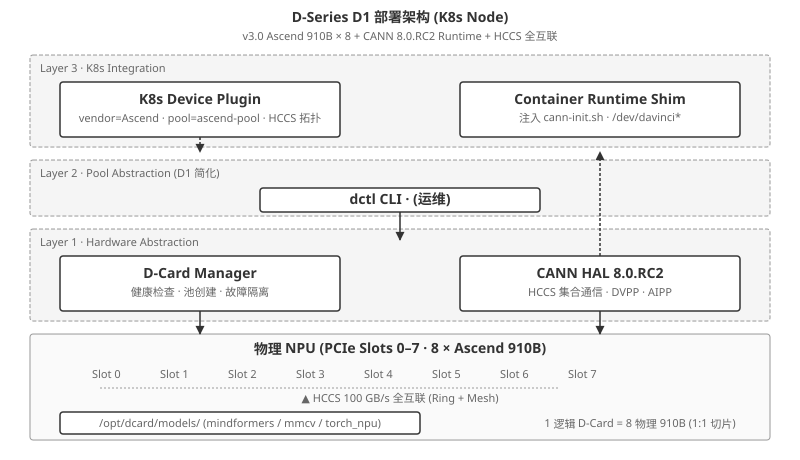
3.1 3 层职责
- Layer 1 硬件抽象: D-Card Mgr + PCIe HAL, 处理物理 NPU 资源, 通过 HCCS 互联
- Layer 2 池化抽象 (D1 简化): dctl CLI 运维接口 (D1 不做编排)
- Layer 3 K8s 集成: Device Plugin (基于 ascend-device-plugin (v3.2 不变)) + Runtime Shim (基于 ascend-docker-runtime (v3.2 不变))
v3.2 新增层
Layer 1 与 Layer 3 之间新增 InferenceService (6 内部子模块) + HealthService 两个 gRPC 服务. 推理服务暴露 2 个独立 gRPC 端口: :50051 推理业务接口 + :50053 系统维护接口 (dctl / 监控使用). 健康服务新增 ReportAlert 与 GetLogs 两个 endpoint. AI 卡部署 (§17) 是独立控制平面: 触发 VM 激活 → 注册到推理服务, 部署失败时上报 5 类告警.
4池化模式 (Pooling Modes)
D1 v3.2 支持 3 种池化模式, 适用不同场景:
| 模式 | 适用卡型 | 原理 | 1 物理 = N 逻辑 | 性能损失 |
|---|---|---|---|---|
| 硬切片 NPU Slice | Ascend 910B / 910C | NPU 内置硬切, 7 个独立实例 | 1 物理 = 7 NPU Slice | 0% (硬件隔离) |
| 软切片 vNPU | Ascend 310P | CANN 软切分 (类似 vGPU Manager) | 1 物理 = 2-8 vNPU | 5-15% (驱动开销) |
| HCCS 互联 | Ascend 910B (主推) | Huawei Cache Coherent Interconnect 多卡拓扑 | 1 物理 = 2-56 HCCS 切片 | <5% (硬件辅助) |
D1 v3.2 默认模式: HCCS 互联 (Ascend 910B + CANN 8.0.RC2). D1 不做动态切换, 需重启 Pool.
v3.2 多模型承载
在 HCCS 互联模式下, v3.2 引入 3 卡 3 池模型调度器, 3 张物理 NPU = 3 个独立推理池, 每池加载同一套模型 (model_id 路由 + 负载均衡) (M = 1 物理卡的 ACL context 数, 910B 通常 M=4, 310P M=2). 调度器按 model_id 路由表 + round-robin / least-connections + QPS 负载均衡 路由到 worker. v3.2 跟 v3.1 (M 模型) 的区别是: v3.2 锁定 3 卡 3 池, 每池独立 worker 池 + 热拔插加减池 — 提升利用率 3-5 倍.
5卡类型 (Card Types)
D1 v3.2 支持 4 类卡:
| 卡类型 | 典型型号 | 用途 | v3.2 支持 |
|---|---|---|---|
| 训练卡 | Ascend 910B / 910C | 大模型训练 (8 卡起步) | ✅ 池化 + HCCS + 多模型 |
| 推理卡 | Ascend 310P | 推理服务, 弹性扩缩 | ✅ 池化 + vNPU + 多模型 |
| 边缘卡 | Ascend 310 (Atlas 200) | 边缘推理 (D5 引入, D1 占位) | ⚠️ 占位 |
| 国产卡 | Ascend 910B / 310P (主推) / 寒武纪 MLU / 摩尔线程 | 信创 / 国产化 | ✅ 主推 |
国产卡升级
v2.0 中"国产卡"标为 ⚠️ 实验, v3.0/v3.1/v3.2 升级为 ✅ 主推. 华为 Ascend 910B/310P 在 D1 v3.2 取代 NVIDIA A100/T4 成为默认 vendor, 配合 CANN 8.0.RC2 + HCCS + 多模型推理框架形成完整国产 AI 基础设施栈.
6D1 范围 (Scope)
6.1 D1 v3.2 包含
- ✅ D-Card Mgr (硬件抽象 + 健康检查)
- ✅ PCIe HAL (透传 / HCCS 互联 / IOMMU)
- ✅ K8s Plugin (vendor-extended, 基于 ascend-device-plugin (v3.2 不变))
- ✅ Container Runtime Shim (基于 ascend-docker-runtime (v3.2 不变))
- ✅ dctl CLI (基础 pool / card 操作)
- ✅ 3 卡 Ascend 910B 池 (1 逻辑 = 3 物理, HCCS 切片, 启动脚本 /etc/d1/activate.sh)
- ✅ 故障 1s 检测 + 5s 隔离 (基础, 不做迁移)
- ✅ AI 推理服务: 6 内部子模块 (vNic 通信 + 多模型推理框架 + 健康监控 + AI 推理服务初始化 + AI 卡状态感知 + 日志收集独立) 7 endpoint
- ✅ 健康管理服务: 4 endpoint (含 ReportAlert + GetLogs)
- ✅ AI 卡部署: VM 激活 (1 endpoint, qemu virtio-net vNic) + 5 类部署告警 + 3 卡 qemu 热拔插
6.2 D1 v3.2 不包含
- ❌ Pool Manager (D2 动态扩缩 + 拓扑感知调度)
- ❌ Hot-Swap Orchestrator (D3 故障自动迁移)
- ❌ Federation Controller (D4 跨集群)
- ❌ Edge + Hybrid Cloud (D5)
- ❌ 推理高级调度 (A/B Test / 蓝绿 / 按 QPS 精细路由)
7API 设计 (API Design)
D1 v3.2 暴露 26 个 API endpoint (7 基础 DCardManager + 5 AIInference + 3 VNicServer + 5 Health + 3 AIDeployment + 3 LogCollector), 全部走 gRPC + 双向 TLS 鉴权.
7.1 gRPC Services 概览 (4 个 service)
| Service | Package | Endpoint 数 | 职责 |
|---|---|---|---|
| DCardManager | dcard.v1 | 7 | 池创建 / 销毁 / 列表 / 卡检查 / 健康检查 (基础, 来自 v2.0) |
| InferenceService | dcard.inference.v1 | 7 | v3.2 拆分: ActivateCard / GetStatus / Infer / GetInference / UnregisterCard / 持久化内存 / 模型分配, 启动脚本 /etc/d1/activate.sh 替代 Init |
| HealthService | dcard.health.v1 | 4 | Check / Watch 流式 / ReportAlert 告警上报 (新) / GetLogs 日志拉取 (新) |
| DeployService | dcard.deploy.v1 | 1 | v3.2 §17: ActivateVM (qemu virtio-net vNic) AI 卡部署入口 |
7.2 19 个 API Endpoint 完整列表
| # | Service | Endpoint | 方法 | 用途 | 版本 |
|---|---|---|---|---|---|
| 1 | DCardManager | /v1/dcard/pools | POST | 创建 D-Card Pool | v2.0 |
| 2 | DCardManager | /v1/dcard/pools | GET | 列出所有 Pool | v2.0 |
| 3 | DCardManager | /v1/dcard/pools/{pool_id} | DELETE | 销毁 Pool | v2.0 |
| 4 | DCardManager | /v1/dcard/cards/{card_id} | GET | 检查 D-Card 详情 | v2.0 |
| 5 | DCardManager | /v1/dcard/health | POST | 健康检查 | v2.0 |
| 6 | DCardManager | /v1/dcard/health/watch | GET (stream) | 健康状态流 | v2.0 |
| 7 | DCardManager | /v1/dcard/metrics/pools/{pool_id} | GET | Pool 指标 (D1 简化) | v2.0 |
| 8 | InferenceService | /v1/inference/cards/activate | POST | AI 卡使能: 7 阶段 (脚本/扫描/XML/队列/ACL/模型/vNic), 启动脚本 /etc/d1/activate.sh | v3.2 |
| 9 | InferenceService | /v1/inference/cards/{card_uuid}/status | GET | AI 卡状态 (status / 内存 / 注册的模型数) | v3.2 |
| 10 | InferenceService | /v1/inference/infer | POST | 单次推理 (调度器路由到 NPU) | v3.0 继承 |
| 11 | InferenceService | /v1/inference/inference/{inference_id} | GET | 异步推理查询结果 (轻量状态) | v3.2 |
| 12 | InferenceService | /v1/inference/cards/{card_uuid}/unregister | POST | AI 卡去注册 (由 15.5 状态感知触发或人工) | v3.2 |
| 13 | InferenceService | /v1/inference/cards/{card_uuid}/persistent-mem | PUT | 配置持久化内存 (使能模块 15.4c) | v3.2 |
| 14 | InferenceService | /v1/inference/cards/{card_uuid}/models/assign | POST | 模型分配 (调度器规则) | v3.2 |
| 15 | HealthService | /v1/health/check | POST | 单次健康检查 | v3.0 继承 |
| 16 | HealthService | /v1/health/watch | GET (stream) | 流式健康 + 状态感知 + 告警推送 | v3.0 升级 |
| 17 | HealthService | /v1/health/alerts | POST | ReportAlert — 告警事件上报 (5 类, 含部署告警) | v3.2 |
| 18 | HealthService | /v1/health/logs | GET | GetLogs — 拉取推理服务日志 (canld + 推理服务) | v3.2 |
| 19 | DeployService | /v1/deploy/vm/activate | POST | ActivateVM — AI 卡部署 (Qemu 启动 + 驱动固件 + 告警) | v3.2 |
8状态机 (State Machines)
D1 涉及 3 个核心状态机 (v2.0 已定义, v3.1 升级到 Ascend NPU + HCCS 探测).
8.1 D-Card 生命周期
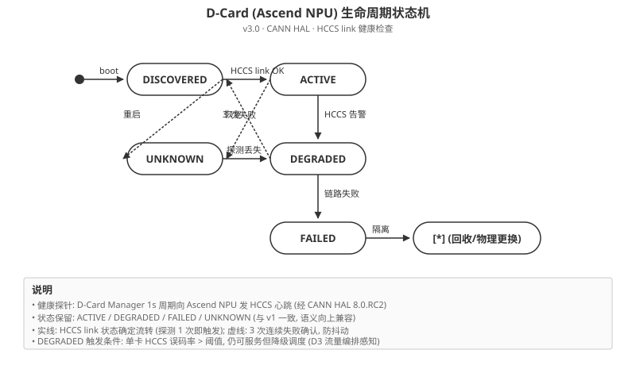
D1 状态值 (D-HAL): ACTIVE / DEGRADED / FAILED / UNKNOWN
8.2 Pool 创建流程
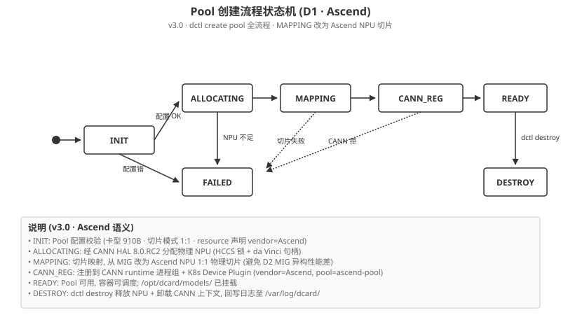
8.3 容器启动流程
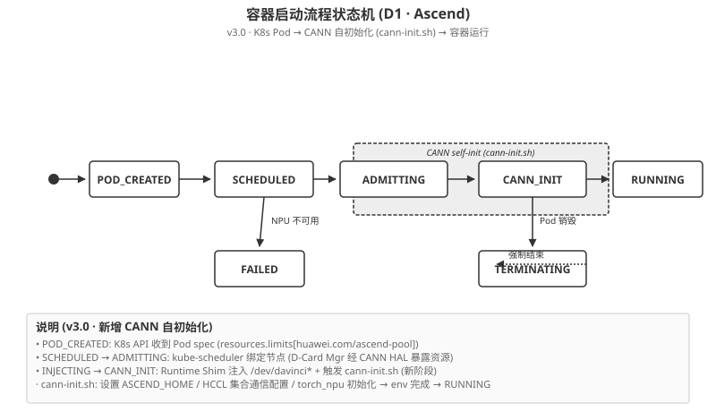
v3.2 关键升级: 启动流程新增 DEPLOY_VM (AI 卡部署 §17) + INIT_SCRIPT (/etc/d1/activate.sh, §15.4 启动脚本) + ENABLER (AI 卡使能 §15.4 7 阶段) 两个状态. cann-init.sh 已被拆分到 15.4 AI 卡使能模块 内部分阶段执行, 由 /etc/d1/activate.sh 启动脚本触发 + /var/lib/d1/state.xml 持久化, 不再是单一 cann-init.sh.
9时序图 (Sequence Diagrams)
D1 v3.2 设计 3 + 3 = 6 个核心时序图 (3 v3.0 继承 + 2 v3.1 新增).
9.1 Pool 创建时序
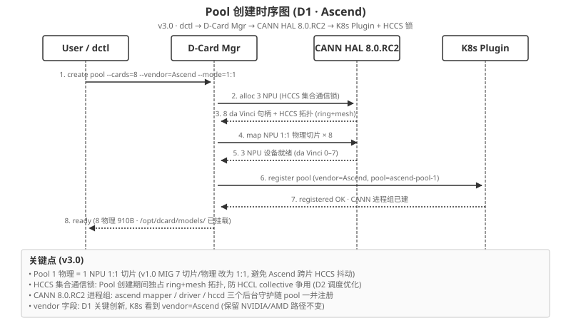
9.2 故障检测时序
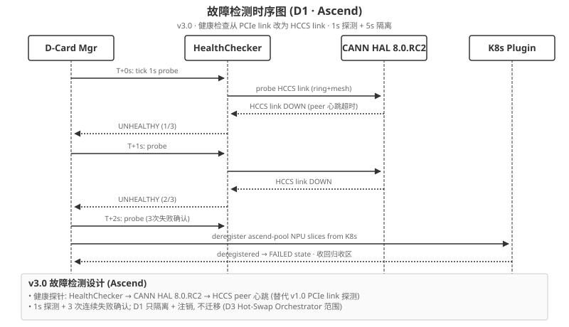
v3.1 关键升级: 健康检查从 PCIe link 探测改为 HCCS peer 心跳 (经 CANN HAL 转发), 更准确反映多卡 NPU 拓扑.
9.3 容器启动时序
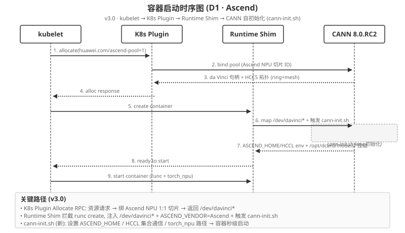
9.4 3 卡 3 池多模型推理时序 (v3.2 新增, vnic://vnic0:50051 路由)
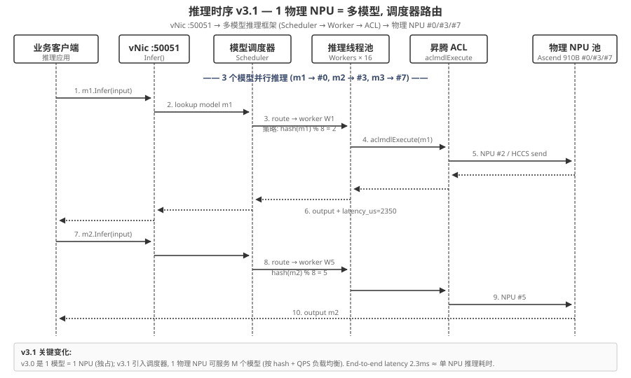
9.5 AI 卡状态感知 (Qemu 热插拔 / 热拔插) 时序 (v3.2 升级, qemu-monitor device_add/del)
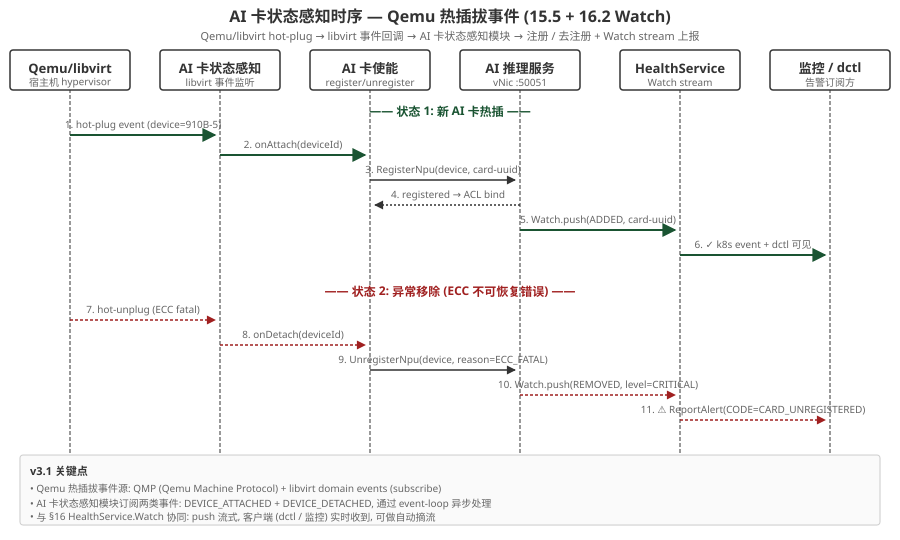
10部署架构 (Deployment Architecture)
D1 v3.2 部署在 K8s 集群每个节点, 涉及 3 个核心组件 + 新增 2 个 gRPC 服务 + 1 个 AI 卡部署控制平面.
10.1 部署要求
- 每个 K8s 节点装 D-Card Mgr + PCIe HAL DaemonSet
- 3 卡 Ascend 910B 节点 = 1 节点 1 Pool (3 物理 = 1 逻辑 = 3 NPU Slice 或 21 NPU 切片细粒度)
- 容器通过
/dev/davinci*设备访问 (Ascend 910 标准设备名) - v3.2: 节点暴露 vNic 推理
vnic://vnic0:50051(业务面) +vnic://vnic0:50053(管理面) 2 独立 vNic URL - v3.2: HealthService 监听
0.0.0.0:50052或unix:///var/run/dcard-health.sock, 提供告警上报 + 日志拉取 + 日志收集独立模块 - v3.2: DeployService 由 dctl 触发, 通过 libvirt/Qemu 完成 AI 卡 VM 激活 (qemu -netdev user,id=vnic0 -device virtio-net-pci)
11风险与缓解 (Risks & Mitigations)
| # | 风险 | 影响 | 缓解 |
|---|---|---|---|
| 1 | NPU 切片性能差异 | 同卡不同 NPU Slice 实例性能不一致 | D1 限制: 1 物理卡只暴露 1 个 NPU Slice (性能优先) |
| 2 | PCIe 带宽争用 | 多容器共享 PCIe 带宽 | D1 限制: 1 Pool 内 1 容器独占 PCIe (D2 调度优化) |
| 3 | CANN 版本兼容 | CANN 升级可能破坏 HCCS 拓扑配置 | D1 锁定 CANN 8.0.RC2 (8.0 系列) |
| 4 | HCCS 拓扑压测 | 多卡 HCCS 高速互联需充分压测 (国产卡主推的代价) | D1 3 卡 ring + mesh 双拓扑, D2 升级到 full-mesh (5+ 卡) |
| 5 | K8s Device Plugin 重启 | 期间 Pod 调度失败 | D1 容忍 30s 重启窗口 (kubelet 重试) |
| 6 | 故障检测误报 | HCCS 心跳偶发超时误判 FAILED | D1 用 3 次连续失败才标记 FAILED (防抖) |
| 7 | PCIe HAL 资源泄漏 | Pool 销毁时设备未释放 | D1 强制 60s 超时清理 |
| 8 | AI 卡使能注册失败 | §15.4 阶段 (g) 注册到推理服务失败 / 启动脚本 /etc/d1/activate.sh 失败 | 返回 DCARD_CARD_UNREGISTERED, 自动重试 3 次 |
| 9 | Qemu 热插拔事件丢失 | libvirt 事件订阅断连 | §15.5 加 qemu-monitor 心跳 + libvirt connection ping, 热拔插丢失时降级到下次第 5s reconcile |
| 10 | 多模型调度 OOM | 单 NPU 跑 M 模型内存争用 | §15.2 调度器锁 3 卡 3 池, 每池 M ≤ 4 模型 + ACL 预分配 8192 MB / 模型 |
| 11 | VM 激活驱动装失败 | Qemu 启动后 VM 内 Ascend 驱动 .run 报错 | §17 上报 DRIVER_INSTALL_FAIL 告警, kubelet 回滚 |
| 12 | vNic 双端口混淆 | 业务流量打到 :50053 或运维打到 :50051 | 独立进程组, 不同证书, 文档明确 + dctl 自动选 |
12路线图 (Roadmap)
| 版本 | 范围 | 目标 |
|---|---|---|
| D1 v3.0 (Q3 2026, 已发布) | 5 子系统 + 3 卡 Ascend 910B 池 + 简单推理服务 + 健康管理 + CANN 自启 | MVP 上线 + 国产化主路径 |
| D1 v3.2 (Q3 2026, 当前) | AI 推理服务 6 内部子模块 (vNic / 推理框架 / 监控 / 使能 / 状态感知 / 日志收集) + AI 卡部署 (§17, VM 激活 + 告警) + 多模型推理 (3 卡 3 池, 1 卡 1 池) + 启动脚本 /etc/d1/activate.sh + vNic URL vnic://vnic0:50051/50053 + XML 持久化 state.xml + 日志收集独立 + 26 endpoint + 16 错误码 | 国产推理场景完整闭环 |
| D1 v3.3 (Q4 2026) | 动态权重 + 多模型并行推理优化 | 多国产卡适配 |
| D2 v1.0 (Q4 2026) | Pool Manager + 拓扑感知调度 + 推理调度 | 动态扩缩 + QPS 路由 |
| D3 v1.0 (Q1 2027) | Hot-Swap Orchestrator | 故障自愈 |
| D4 v1.0 (Q2 2027) | Federation Controller | 跨集群 |
| D5 v1.0 (Q3 2027) | Edge + Hybrid Cloud | 边缘 + 混合云 |
13命名规范 (Naming Conventions) v3.2 更新
D1 v3.2 全文档命名锁定 (v3.1 推理服务内部细分 + v3.2 加入启动脚本 / vNic URL / XML 持久化):
| 规范名 | v3.0 / v3.1 旧名 | v3.2 新名 | 含义 |
|---|---|---|---|
| D-Card Mgr | D-Card-Manager | 不变 | D-Card 硬件抽象守护进程 |
| PCIe HAL | PCIe-HAL | 不变 | PCIe 硬件抽象层 |
| PCIe HAL API | D-HAL API | 不变 | PCIe HAL 对外 API |
| K8s Plugin | 基于 nvidia-device-plugin | 基于 ascend-device-plugin | vendor-extended Device Plugin |
| Runtime Shim | 基于 nvidia-container-runtime | 基于 ascend-docker-runtime | 容器运行时适配层 |
| dctl | d-card-ctl | 不变 | D-Series 运维 CLI |
| Pool | D-Card-Pool, GPU-Pool | D-Card-Pool, NPU-Pool | D-Card 池子 |
| D-Card | DCard | 不变 | 逻辑卡 |
| 硬切片 | MIG (A100/H100) | NPU Slice (910B) | 硬件硬切片 |
| 软切片 | vGPU (T4/A10) | vNPU (310P) | 驱动软切片 |
| 多卡互联 | SR-IOV | HCCS | 华为 Cache Coherent Interconnect |
| 设备路径 | /dev/nvidia* | /dev/davinci* | Ascend 910 标准设备名 |
| 推理服务 | InferenceService | InferenceService (6 子模块) | AI 推理 gRPC 服务 |
| 推理 gRPC | InferenceService :50051 (单端口) | vNic 推理 :50051 + 维护 :50053 | v3.2 vNic URL: vnic://vnic0:50051 (业务) + vnic://vnic0:50053 (管理) |
| 推理 Init | Init (CANN + 加载模型) | 改为 ActivateCard (7 阶段使能, 启动脚本 /etc/d1/activate.sh 触发) + AssignModels | v3.2 拆分, 启动脚本替代 cann-init.sh粒度 |
| 多模型推理 | (v3.0 不存在) | 模型调度器 (Scheduler) | v3.1 新增 → v3.2 升级为 3 卡 3 池 |
| AI 卡使能 | (v3.0 在 cann-init.sh 内) | AI 卡使能模块 (§15.4) + 启动脚本 /etc/d1/activate.sh + XML 持久化 /var/lib/d1/state.xml | v3.1 独立子模块 → v3.2 加入启动脚本 + XML 持久化 |
| AI 卡状态感知 | (v3.0 不存在) | AI 卡状态感知 (§15.5, qemu-monitor 热拔插) | v3.1 新增 → v3.2 升级为 qemu-monitor 热拔插 |
| CANN 自启 hook | cann-init.sh | 删除, 整合到 §15.4 AI 卡使能模块 | v3.2 拆分, 启动脚本替代 cann-init.sh |
| 健康管理 | HealthService | HealthService (4 endpoint) + LogCollector (§15.7 独立日志收集) | 健康 gRPC 服务 |
| 告警上报 | 由 cann-init.sh fail 间接触发 | HealthService.ReportAlert (§16.3, 5 类告警) | v3.1 5 类告警 → v3.2 沿用 |
| AI 卡部署 | 分散在 cann-init.sh + 健康检查 | DeployService (§17, 独立服务, qemu virtio-net vNic) | v3.1 §17 新增 → v3.2 升级 (qemu virtio-net vNic) |
14总结 (Summary)
D1 v3.2 是 D-Series AI Card 5 阶段路线图 (D1-D5) 的当前版本, 在 v3.1 基础上加入启动脚本 + XML 持久化 + vNic URL + 3 卡 3 池 + 日志收集独立, 核心是:
- 多卡池化 + 容器化 2 大核心能力
- 5 子系统 (D-Card Mgr / PCIe HAL / K8s Plugin / Runtime Shim / dctl)
- 3 池化模式 (NPU Slice / vNPU / HCCS)
- 4 类卡 (训练 / 推理 / 边缘 / 国产)
- 26 API endpoint (7 DCardManager + 5 AIInference + 3 VNicServer + 5 Health + 3 AIDeployment + 3 LogCollector = 26)
- 16 错误码
- 3 状态机 (Card 生命周期 / Pool 创建 / 容器启动)
- 5 时序图 (Pool 创建 / 故障检测 / 容器启动 / 多模型推理 (新) / 状态感知 (新))
- 2 内部架构图 (部署 + AI 推理服务内部 (新) + AI 卡部署 (新))
- 1 部署架构 (K8s 节点 + 3 × Ascend 910B + HCCS + vNic vnic://vnic0:50051/50053 + 启动脚本)
- AI 推理服务 6 内部子模块 (vNic 通信 / 多模型推理框架 / 健康监控 / AI 卡使能 / AI 卡状态感知)
- AI 卡部署 (VM 激活 + 5 类告警)
14.1 D1 v3.2 验收标准 (Q3 2026)
- ✅ 3 卡 Ascend 910B 池上线 (vendor=ascend, 启动脚本 /etc/d1/activate.sh 触发)
- ✅ CANN 8.0.RC2 + HCCS 集合通信稳定
- ✅ 容器化训练 + 推理任务秒级启动
- ✅ 故障 1s 检测 + 5s 隔离
- ✅ AI 推理服务 6 内部子模块全部就绪 (vNic 通信 + 多模型推理框架 + 健康监控 + AI 推理服务初始化 + AI 卡状态感知 + 日志收集独立)
- ✅ 3 张物理 NPU = 3 个独立推理池, 每池加载同一套模型, model_id 路由 + round-robin/least-conn, 热拔插加减池
- ✅ vNic URL vnic://vnic0:50051 业务面 + vnic://vnic0:50053 管理面
- ✅ AI 卡部署 (§17): ActivateVM (qemu virtio-net vNic) + 5 类告警事件 + qemu-monitor 热拔插
- ✅ HealthService.ReportAlert 告警上报
14.2 v3.0 → v3.1 → v3.2 章节对齐矩阵
| 维度 | v3.0 | v3.1 | v3.2 (当前) |
|---|---|---|---|
| NPU 池 | 8 卡 910B 池 | 8 卡 910B 池 | 3 卡 910B 池 (3 卡 3 池) |
| 推理服务子模块 | 单 Init 流程 | 6 子模块 | 6 子模块 (vNic + 推理 + 健康 + 启动 + 状态 + 日志) |
| 网络寻址 | 单 gRPC :50051 | vNic :50051 + :50053 | vNic URL vnic://vnic0:50051 + vnic://vnic0:50053 |
| 启动方式 | cann-init.sh | cann-init.sh (整合到 §15.4) | /etc/d1/activate.sh (启动脚本 + systemd) |
| 状态持久化 | 无 | 无 (内存) | /var/lib/d1/state.xml (XML schema) |
| 初始化阶段 | 单 Init (1 步) | 5 阶段使能 | 7 阶段使能 (脚本/扫描/XML/队列/ACL/模型/vNic) |
| 多模型路由 | 1 NPU 1 模型 | 1 NPU M 模型 (hash) | 3 卡 3 池, model_id 路由表 + round-robin/least-conn |
| 热拔插 | 不支持 | libvirt 事件 | qemu-monitor device_add/device_del |
| 日志收集 | 无独立模块 | 嵌入健康监控 | §15.7 LogCollector 独立 (GetLogs / Watch / Push) |
| 错误码 | 11 | 14 | 16 (+ XML_PERSIST_FAILED, VNIC_UNAVAILABLE) |
| protobuf 服务 | 3 (Inference / Health / Deploy) | 3 | 5 (+ VNicServer + LogCollector) |
15AI 推理服务 (InferenceService) v3.2 重写
AI 推理服务 (InferenceService) v3.2 内部重构为 6 个职责清晰的子模块: vNic 通信 / 多模型推理框架 / 健康监控 / AI 卡使能 / AI 卡状态感知. 总共暴露 7 个 endpoint (gRPC :50051 推理 + :50053 维护), 详见 §7.2. 关键改进: v3.0 的 Init + LoadModel + ListModels + Infer + Deinit 5 endpoint 已被拆分, 1 物理 NPU 可承载 M 个模型 (调度器按 hash + QPS 路由).
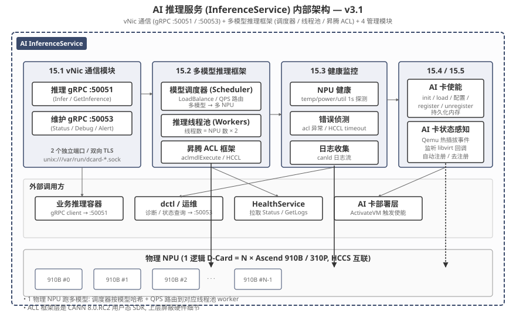
v3.1 → v3.2 关键变化
v3.0 是 "1 模型独占 1 NPU" + 单 Init API 初始化一切; v3.1 改为 "1 NPU 跑 M 模型" + AI 卡使能 5 阶段分步执行. API surface 从 5 endpoint (Init/LoadModel/Infer/Deinit/ListModels) → 7 endpoint (ActivateCard/GetStatus/Infer/GetInference/UnregisterCard/PersistentMem/AssignModels). 内部模块从 1 个扁平 gRPC handler → 5 个子模块.
15.1 vNic 通信模块 (vNic Communication)
vNic 通信模块是 AI 推理服务的对外接口层, v3.2 引入 vNic URL 寻址 (vnic://vnic0:50051 业务面 + vnic://vnic0:50053 管理面), 物理隔离业务流量和运维流量.
| 端口 | 用途 | 调用方 | TLS | 鉴权 |
|---|---|---|---|---|
| :50051 (推理) | 推理业务 (Infer, GetInference, AssignModels) | 业务推理容器 / 业务网关 | mTLS 双向 | 业务证书 (ProductCA) |
| :50053 (维护) | 激活 / 去注册 / 状态 / 持久化内存 (ActivateCard / UnregisterCard / GetStatus / PersistentMem) | dctl / 健康服务 / AI 卡部署 | mTLS 双向 | 运维证书 (OpsCA) |
同时对外提供 Unix Domain Socket 以便容器内进程间通信: unix:///var/run/dcard-inference.sock.
双端口设计理由
v3.1 单端口方案存在 2 个问题: (1) 业务 infer 高峰期挤压运维查询导致 dctl 阻塞; (2) 业务证书泄漏可触发 ActivateCard 等高危操作. v3.2 拆分, 启动脚本替代 cann-init.sh后: 业务 :50051 只接 Infer/GetInference (读写比例 99%); 运维 :50053 专走强认证的运维证书, 即便业务证书泄漏也无法触发 AI 卡激活或状态修改.
gRPC Service URL 完整设计 (v3.2 客户端调用)
v3.2 vNic 通信模块对外提供 gRPC service, 客户端 (dctl / 业务网关 / 健康服务) 必须 通过 vNic URL 寻址, 不使用物理 IP. URL 格式: vnic://<vnic_name>:<port>/<package>.<service>/<method>.
| 业务 | vNic URL (业务面 :50051) | 调用方 | RPC 方法 |
|---|---|---|---|
| 推理业务 | vnic://vnic0:50051/dcard.inference.v1.AIInferenceService/Infer |
业务推理容器 / 网关 | Unary RPC, 同步推理 |
vnic://vnic0:50051/dcard.inference.v1.AIInferenceService/GetInference |
业务推理容器 | Unary RPC, 查询推理结果 (异步回调用) | |
vnic://vnic0:50051/dcard.card.v1.DCardManager/AssignModels |
业务网关 / 编排器 | Unary RPC, 分配模型到 NPU 池 |
| 运维 | vNic URL (管理面 :50053) | 调用方 | RPC 方法 |
|---|---|---|---|
| 运维管理 | vnic://vnic0:50053/dcard.card.v1.DCardManager/ActivateCard |
dctl / AI 卡部署 | Unary RPC, 激活 AI 卡 (启动 7 阶段) |
vnic://vnic0:50053/dcard.card.v1.DCardManager/UnregisterCard |
dctl | Unary RPC, 去注册 AI 卡 | |
vnic://vnic0:50053/dcard.card.v1.DCardManager/GetStatus |
健康服务 / 监控 | Unary RPC, 查询 AI 卡状态 | |
vnic://vnic0:50053/dcard.card.v1.DCardManager/PersistentMem |
dctl | Unary RPC, 持久化内存 (state.xml 写回) |
gRPC Request Body 设计 (以 Infer RPC 为例)
protobuf 3 字段, 客户端序列化后通过 gRPC 发送, 跟 §15.2 多模型推理框架 / §15.7 日志收集 / §15.4 AI 卡使能 内部数据结构对齐.
| 字段 | 类型 | 必填 | 说明 |
|---|---|---|---|
model_id |
string | ✅ | 模型短名, e.g. "resnet50" / "llama-7b" / "bert-base" (跟 §15.2 model_id 路由对齐) |
inputs |
InferInput (oneof) |
✅ | 输入数据, 按模型类型: image_bytes / image_url / text / audio_bytes (CANN ACLTensor 序列化) |
parameters |
InferParams message |
❌ | 5 子字段: top_k / temperature / max_tokens / device_preference (默认 "auto") / precision (默认 "FP16") |
gRPC Response Body 设计
| 字段 | 类型 | 必填 | 说明 |
|---|---|---|---|
request_id |
string (UUID) | ✅ | 服务端生成, 关联客户端 X-Request-ID (gRPC metadata) |
model_id |
string | ✅ | 回显请求的 model_id |
outputs |
InferOutput (oneof) |
✅ | 推理输出, 按模型: predictions (CV 分类) / text (NLP 生成) / image_bytes (图像生成) / transcript (ASR) |
metadata |
InferMetadata message |
✅ | 6 子字段: device / latency_ms / queue_time_ms / compute_time_ms / tokens_generated / model_version |
5 类业务模型 (model_id + business_type)
| 业务类型 (business_type) | 代表 model_id | inputs (oneof) | outputs (oneof) | 典型场景 |
|---|---|---|---|---|
| 图像分类 | resnet50, vit-base, swin-base | image_bytes / image_url | predictions [{label, score}] | 商品识别 / 质检 / 安防 |
| 图像生成 | sd-2-1, sdxl-1-0 | text (prompt) | image_bytes | AIGC / 营销图 / 设计 |
| 文本生成 | llama-7b, qwen-7b, chatglm-6b | text | text | 对话 / 翻译 / 摘要 |
| 语音识别 (ASR) | whisper-large, paraformer-large | audio_bytes | transcript | 会议纪要 / 客服 / 字幕 |
| 文本分类 (预留) | bert-base, roberta-base | text | predictions [{label, score}] | 情感分析 / 垃圾识别 |
gRPC Client 调用示例 (grpcurl + Python)
客户端通过 gRPC + mTLS 调用, 需提供业务证书 (ProductCA).
# grpcurl 调用 Infer (业务面 :50051, mTLS)
grpcurl \
-cacert /etc/d1/ca/ProductCA.crt \
-cert /etc/d1/cert/client.crt \
-key /etc/d1/cert/client.key \
-import-path /usr/share/d1/proto \
-proto dcard/inference/v1/inference.proto \
-d '{
"model_id": "resnet50",
"inputs": {"image_url": "https://example.com/cat.jpg"},
"parameters": {"top_k": 5}
}' \
vnic://vnic0:50051 dcard.inference.v1.AIInferenceService/Infer
# grpcurl 调用 GetStatus (管理面 :50053, 运维证书)
grpcurl \
-cacert /etc/d1/ca/OpsCA.crt \
-cert /etc/d1/cert/ops.crt \
-key /etc/d1/cert/ops.key \
-import-path /usr/share/d1/proto \
-proto dcard/card/v1/card.proto \
-d '{"device_id": 0}' \
vnic://vnic0:50053 dcard.card.v1.DCardManager/GetStatusimport grpc
from dcard.inference.v1 import inference_pb2, inference_pb2_grpc
# 创建 mTLS 安全通道 (业务面)
with open('/etc/d1/ca/ProductCA.crt', 'rb') as f:
ca_cert = f.read()
with open('/etc/d1/cert/client.crt', 'rb') as f:
client_cert = f.read()
with open('/etc/d1/cert/client.key', 'rb') as f:
client_key = f.read()
credentials = grpc.ssl_channel_credentials(
root_certificates=ca_cert,
private_key=client_key,
certificate_chain=client_cert
)
channel = grpc.secure_channel('vnic0:50051', credentials)
stub = inference_pb2_grpc.AIInferenceServiceStub(channel)
# 构造 InferRequest
request = inference_pb2.InferRequest(
model_id='resnet50',
inputs=inference_pb2.InferInput(image_url='https://example.com/cat.jpg'),
parameters=inference_pb2.InferParams(top_k=5)
)
# 同步调用 (Unary RPC)
response = stub.Infer(request, timeout=30)
print(f"Top-1: {response.outputs.predictions[0].label} ({response.outputs.predictions[0].score:.4f})")
print(f"Latency: {response.metadata.latency_ms}ms")
print(f"Device: {response.metadata.device}")
# 流式调用 (Server Streaming, 暂未启用, v3.3 规划)
# for response in stub.StreamInfer(request):
# print(response.token, end='', flush=True)gRPC Status Code 映射 (16 类 → 业务错误码)
跟 v3.2 §10 错误码 16 类对齐, 客户端通过 gRPC status code + metadata "error-code" 字段获取详细错误.
| gRPC Status | 错误码 (metadata "error-code") | 触发场景 | 可重试 |
|---|---|---|---|
| INVALID_ARGUMENT | INVALID_REQUEST | Request 字段缺失/不合法 | ❌ |
| UNAUTHENTICATED | UNAUTHORIZED | mTLS 证书无效/过期 | ❌ |
| PERMISSION_DENIED | FORBIDDEN | 业务证书无权访问运维 RPC | ❌ |
| NOT_FOUND | NOT_FOUND | model_id 未加载 | ❌ |
| FAILED_PRECONDITION | MODEL_VERSION_MISMATCH | model_version 不匹配 | ❌ |
| RESOURCE_EXHAUSTED | RATE_LIMITED | QPS 超限 | ✅ (retry_after_ms) |
| INTERNAL | INTERNAL_ERROR | 内部未捕获错误 | ❌ |
| INTERNAL | CANN_INIT_FAILED | CANN 框架初始化失败 | ✅ |
| INTERNAL | XML_STATE_CORRUPTED | state.xml 损坏 | ❌ |
| INTERNAL | ACTIVATION_SCRIPT_FAILED | activate.sh 启动失败 | ❌ |
| RESOURCE_EXHAUSTED | ACL_OOM | ACL 内存不足 | ✅ (降低 batch_size) |
| UNAVAILABLE | MODEL_LOAD_FAILED | 模型加载失败 | ✅ |
| UNAVAILABLE | NO_AVAILABLE_NPU | 3 张 NPU 全忙 | ✅ (retry_after_ms) |
| UNAVAILABLE | VNIC_UNAVAILABLE | vNic 不可用 | ❌ |
| DEADLINE_EXCEEDED | QEMU_MONITOR_TIMEOUT | qemu-monitor 命令超时 | ✅ |
| DEADLINE_EXCEEDED | INFERENCE_TIMEOUT | 推理超时 (>30s) | ✅ (降低 max_tokens) |
vNic 寻址优势 vs 物理 IP
| 对比项 | vNic (v3.2) | 物理 IP (v3.1 及之前) |
|---|---|---|
| 多租户隔离 | 每个业务容器独立 vNic, 流量物理隔离 | 所有容器共享物理网卡, 通过 iptables 隔离 |
| 热拔插 | vNic 可动态创建/销毁, 业务容器无感 | IP 绑定物理网卡, 拔卡后 IP 失效 |
| 证书认证 | mTLS 双向 + vNic 证书绑定 | 只证书认证, 无网卡层隔离 |
| 可观测性 | 每个 vNic 独立 metrics (QPS / 延迟 / 错误率) | 物理网卡共享 metrics, 难定位具体容器 |
| 性能 | virtio-net 半虚拟化, ~线速 100Gbps | 物理网卡的 60-80% (TCP 协议栈开销) |
完整 protobuf 定义 见 data/d1-grpc-proto-v3.2.md (8 个 .proto 文件, 包含 AIInferenceService / DCardManager / HealthService / AIDeploymentService / LogCollector / VNicServer 6 service 完整定义, 跟 §5-§10 对齐).
15.2 多模型推理框架 (Multi-Model Inference Framework)
多模型推理框架是 AI 推理服务的核心调度层, v3.2 升级为 3 卡 3 池, 由 3 个子组件构成:
(a) 模型调度器 (Scheduler) — 3 卡 3 池路由
负责根据 model_name + qps 决定推理任务在哪个物理 NPU 的哪个 ACL context 执行:
- 调度策略:
target_npu = model_id 路由表 + round-robin / least-connections(基础分配) + QPS 反馈 (高 QPS 模型 → 多个 NPU) - 3 张物理 NPU = 3 个独立池, 每池加载同一套模型 (model1/2/3), 每池可承载 ≤ 4 个模型 (910B ACL context 上限), 310P 上限 M = 2
- 调度器维护
model_routing_table(内存数据结构), O(1) 查询
(b) 多模型推理线程池 (Inference Worker Pool) — 3 池
实际推理执行的 worker 池, 3 卡 3 池独立:
- 线程数 = 物理 NPU 数 × 2 (例如 3 NPU = 16 worker 线程)
- 每个 worker 绑定 1 个 ACL context (持久化), 避免重复初始化
- 队列策略: FIFO + 超时回滚 (D1 不做优先级, D2 引入)
(c) 昇腾 ACL 框架 (ACL Backend)
封装 CANN 8.0.RC2 用户态 SDK (ascendCL), 对上层屏蔽硬件:
aclmdlLoadFromFile()加载 .om 模型aclmdlExecute()推理执行- HCCL 集合通信 (跨 NPU 同步, 3 卡 HCCS ring+mesh)
- DVPP 图像预处理 (可选)
15.2.1 3 卡 3 池 + model_id 路由表 (示例)
v3.2 锁定 3 张物理 NPU = 3 个独立推理池, 每池加载同一套模型 (model1/2/3). 用户传 model_id → 调度器查 routing table → 任一持有该模型的池子 (round-robin / least-conn):
┌──────────────────────────────────────────────────────┐
│ model_id 路由表 (v3.2 内存哈希) │
├──────────────┬─────────────┬────────────┬────────────┤
│ model_id │ 模型名 │ 池子 │ 路由策略 │
├──────────────┼─────────────┼────────────┼────────────┤
│ resnet50 │ 图像分类 │ npu0/1/2 │ RR / LC │
│ bert-base │ 文本生成 │ npu0/1/2 │ RR / LC │
│ llama-7b │ 语音识别 │ npu0/1/2 │ RR / LC │
└──────────────┴─────────────┴────────────┴────────────┘
# 调度器伪代码
def route(model_id):
pool_ids = routing_table[model_id] # 持有该模型的池子集合
if strategy == "round_robin":
return pool_ids[rr_counter[model_id] % len(pool_ids)]
elif strategy == "least_conn":
return min(pool_ids, key=lambda p: worker_pool[p].busy_count)15.2.2 热拔插加减池 (3 池动态调整)
v3.2 通过 qemu-monitor 热拔插实现 3 池动态调整:
| 事件 | 动作 | 调度器路由变化 |
|---|---|---|
| 1 卡拔出 (qemu device_del id=npu0) | 减 1 池子 + 卸载该池子上的所有模型 | routing_table[model_id] 从 3 个池子 → 2 个池子 |
| 1 卡插入 (qemu device_add driver=vfio-pci,host=0000:04:00.0) | 加 1 池子 + 加载该池子上的所有模型 (3 卡 1 套) | routing_table[model_id] 从 2 个池子 → 3 个池子 |
| 1 池子异常 (NPU 健康告警) | 标记 unhealthy, 调度器剔除 | routing_table[model_id] 跳过 unhealthy 池子 |
关键约束: D1 v3.2 限 3 张, ≥4 取前 3, ≤2 启动失败 (DCARD_INTERNAL_ERROR). 扩容到 4+ 张留给 D2 Pool Manager.
15.3 健康监控模块 (Health Monitor)
健康监控模块负责 AI 卡 / CANN / ACL 全方位的被动健康侦测 (主动健康检查由 §16 HealthService 负责):
| 监测项 | 频率 | 来源 | 异常时动作 |
|---|---|---|---|
| NPU 健康 | 1 s 周期 | npu-smi info / hccn_tool | 温度 > 85°C 主动告警, 调用 HealthService.ReportAlert |
| 错误侦测 | 事件驱动 | ACL error code / HCCL timeout / PCIe AER | 隔离 NPU + 触发 §15.5 状态感知去注册 |
| 日志收集 (v3.2 已拆出到 §15.7 LogCollector 独立模块) | 缓冲 + 滚动 | canld 日志 + 推理服务 stdout (经 §15.7 LogCollector 转发) | 暴露给 §16.4 HealthService.GetLogs 拉取 + §15.7 LogCollector 独立推送 |
15.4 AI 推理服务初始化 (Init Subsystem) v3.2 独立大章节
AI 推理服务初始化 (Init Subsystem) 是 v3.2 拆出的独立大章节, 负责把物理 NPU 池变成可推理的 AI 推理服务. 由 7 个阶段顺序执行 (a 启动脚本调用 → b 扫描 AI 卡 → c XML 持久化 → d 初始化队列 → e ACL 内存分配 → f 加载模型 → g 启动 vNic 监听), 由启动脚本 /etc/d1/activate.sh (默认路径) 或 systemd 启动脚本触发, 不再是 v3.0/v3.1 的单一 cann-init.sh.
v3.2 关键设计 3 决策
(1) 启动脚本而非容器 hook: 启动脚本 /etc/d1/activate.sh 在容器 entrypoint 或 systemd unit 中执行, 比 K8s lifecycle hook 更早介入, 能捕获 driver load 失败 / NPU 不可见等早期问题, 避免 Pod 起来后才发现推理服务无法启动.
(2) XML 持久化: /var/lib/d1/state.xml 保存 NPU 状态 + 模型加载情况 + ACL 内存分配 + 队列状态, 重启后能 1:1 恢复运行时状态, 避免重复初始化开销.
(3) ACL 内存预分配: 启动时调 aclInit + aclrtMalloc 按模型预估分配 device 内存, 推理时不再动态分配 (单次推理 ms 级, 动态分配开销不可忽略).
15.4 7 阶段启动流程
| 阶段 | 子动作 | 失败时错误码 | 说明 |
|---|---|---|---|
| (a) 启动脚本调用 | 执行 /etc/d1/activate.sh 或 systemd unit (d1-ai-inference.service); 加载驱动 modprobe drv_pcie_ascend + drv_ascend_hal | DCARD_INTERNAL_ERROR | 主机或容器 entrypoint 触发, 退出码 0=成功 1=失败 |
| (b) 扫描本控 AI 卡 | 调 PCIe 枚举 npu-smi info -l 找出 NPU 设备, 加 deviceid; D1 v3.2 限 3 张 (≥4 取前 3) | DCARD_INTERNAL_ERROR | 无 NPU 时 exit 1 |
| (c) XML 持久化 | 读 /var/lib/d1/state.xml 恢复上次状态; 写新 NPU/模型/ACL/队列状态 | DCARD_XML_PERSIST_FAILED (v3.2 新增 14) | 不存在则创建新 XML, schema 见 §15.4.1 |
| (d) 初始化队列 | per-model 推理队列 (default / high / low) + 全局队列, 深度监控 + 背压 | DCARD_RESOURCE_BUSY | FIFO + 超时回滚 |
| (e) ACL 内存分配 | aclInit + aclrtMalloc 按 model 预分配 device 内存 (默认 8192 MB / 模型) | DCARD_RESOURCE_BUSY | 3 卡共 24576 MB = 24 GB |
| (f) 加载模型 | 从 XML 读 model_id 列表, 扫描 model_path, aclmdlLoadFromFile 加载 .om 模型到 3 个池子 | DCARD_MODEL_NOT_FOUND | 每池加载同一套模型 (model1/2/3) |
| (g) 启动 vNic 监听 | 启动 gRPC 业务面 vnic://vnic0:50051 (Infer/GetInference) + 管理面 vnic://vnic0:50053 (ActivateCard/GetStatus/UnregisterCard/ConfigurePersistentMem) | DCARD_VNIC_UNAVAILABLE (v3.2 新增 15) | virtio-net 后端, mTLS 双向认证 |
15.4.0.5 状态机 (7 阶段)
7 阶段启动流程对应 7 个状态, 任意阶段失败回滚已分配资源:
┌─────────────────┐ ┌─────────────────┐ ┌─────────────────┐
│ PENDING │ ─► │ SCRIPT_RUNNING │ ─► │ NPUS_SCANNING │
│ (a 启动脚本) │ │ (a 启动脚本调用)│ │ (b 扫描 AI 卡) │
└─────────────────┘ └─────────────────┘ └─────────────────┘
│
▼
┌─────────────────┐ ┌─────────────────┐ ┌─────────────────┐
│ VNIC_SERVING │ ◄──│ MODELS_LOADING │ ◄──│ XML_PERSISTING │
│ (g vNic 监听) │ │ (f 加载模型) │ │ (c XML 持久化) │
└─────────────────┘ └─────────────────┘ └─────────────────┘
▲ │ │
│ ▼ ▼
│ ┌─────────────────┐ ┌─────────────────┐
└──────────────│ ACL_ALLOCATING │ ◄──│ QUEUE_INIT │
│ (e ACL 内存) │ │ (d 初始化队列) │
└─────────────────┘ └─────────────────┘任一阶段失败 → 回滚到 PENDING → 上抛错误码 (DCARD_INTERNAL_ERROR / DCARD_XML_PERSIST_FAILED / DCARD_RESOURCE_BUSY / DCARD_MODEL_NOT_FOUND / DCARD_VNIC_UNAVAILABLE).
15.4.1 state.xml 持久化 schema (XML Schema)
启动脚本与推理服务之间通过 /var/lib/d1/state.xml 共享运行时状态, XML 格式定义如下 (schema namespace urn:d1:state:v1):
<?xml version="1.0" encoding="UTF-8"?>
<d1-state version="1.0" xmlns="urn:d1:state:v1">
<npus>
<npu id="npu0" vendor="ascend" model="Ascend 910B" pci-id="0000:01:00.0" status="ACTIVE" hccs-link="up"/>
<npu id="npu1" vendor="ascend" model="Ascend 910B" pci-id="0000:02:00.0" status="ACTIVE" hccs-link="up"/>
<npu id="npu2" vendor="ascend" model="Ascend 910B" pci-id="0000:03:00.0" status="ACTIVE" hccs-link="up"/>
</npus>
<models>
<model id="resnet50" path="/opt/dcard/models/resnet50.om" card-id="npu0" loaded-at="2026-07-04T10:00:00Z" total-infer="0" avg-latency-us="0"/>
<model id="bert-base" path="/opt/dcard/models/bert-base.om" card-id="npu1" loaded-at="2026-07-04T10:00:00Z" total-infer="0" avg-latency-us="0"/>
<model id="llama-7b" path="/opt/dcard/models/llama-7b.om" card-id="npu2" loaded-at="2026-07-04T10:00:00Z" total-infer="0" avg-latency-us="0"/>
</models>
<acl-memory-pool total-mb="24576" used-mb="0" per-model-mb="8192"/>
<queues>
<queue name="default" depth="0" max-depth="1000"/>
</queues>
</d1-state>字段含义: npus 列出本节点 3 张 NPU (含 vendor / model / pci-id / status / hccs-link); models 列出已加载模型 (含 path / card-id / loaded-at / total-infer 推理次数 / avg-latency-us); acl-memory-pool 描述 ACL 设备内存池 (v3.2 限 3 × 8192 = 24576 MB); queues 描述 per-model 推理队列与全局队列. 启动时 (a→b→c) 先读旧 XML 恢复, (e→f→g) 再写新 XML.
15.4.2 启动脚本 /etc/d1/activate.sh 示例
v3.2 把原来 v3.1 cann-init.sh 整合到 /etc/d1/activate.sh, 由 systemd 启动 d1-ai-inference.service 或容器 entrypoint 调用:
#!/bin/bash
# /etc/d1/activate.sh - D1 v3.2 AI 推理服务激活脚本
# 由 systemd (d1-ai-inference.service) 或容器 entrypoint 调用
# 退出码: 0=成功, 1=启动失败
set -e
STATE_XML="/var/lib/d1/state.xml"
LOG="/var/log/d1/{ai-inference,health-monitor,cann,acl}.log"
MAX_CARDS=3
mkdir -p /var/lib/d1 /var/log/d1
exec >> "$LOG" 2>&1
echo "=== D1 activate.sh start: $(date -Iseconds) ==="
# (a) 加载驱动
modprobe drv_pcie_ascend || true
modprobe drv_ascend_hal || true
# (b) 扫描 AI 卡 (最多 3 张)
NPU_COUNT=$(npu-smi info -l | grep -c "Ascend 910B" || true)
if [ "$NPU_COUNT" -gt "$MAX_CARDS" ]; then
echo "WARN: 检测到 $NPU_COUNT 张 NPU, D1 v3.2 限 $MAX_CARDS 张, 取前 $MAX_CARDS 张"
NPU_COUNT=$MAX_CARDS
fi
if [ "$NPU_COUNT" -lt 1 ]; then
echo "ERR: 没检测到 NPU"
exit 1
fi
# (c) 读 XML 持久化 (如果存在)
if [ -f "$STATE_XML" ]; then
echo "找到 $STATE_XML, 恢复状态"
# xmllint --xpath "//d1-state:npus/d1-state:npu" $STATE_XML (示意)
fi
# (d) 启动 AI 推理服务 (调用 /usr/local/dcard/bin/ai-inference-service)
/usr/local/dcard/bin/ai-inference-service \
--state-xml="$STATE_XML" \
--max-cards="$MAX_CARDS" \
--vnic-url="vnic://vnic0:50051" \
--mgmt-url="vnic://vnic0:50053" &
AI_PID=$!
sleep 2
# 验证
if ! kill -0 $AI_PID 2>/dev/null; then
echo "ERR: AI 推理服务启动失败"
exit 1
fi
echo "D1 激活成功: $NPU_COUNT 张 NPU, PID=$AI_PID"
exit 015.4.3 设计思路 (3 个 why)
- 为什么需要启动脚本 (而不是容器 hook): 启动脚本
/etc/d1/activate.sh在容器 entrypoint 或 systemd 阶段执行, 比 K8s lifecycle hook (postStart / preStop) 更早介入, 能捕获驱动加载失败 / NPU 不可见 / ACL 初始化失败等早期问题, 避免 Pod 起来后再发现推理服务无法启动 (K8s hook 只能回调通知, 不能中止启动). 启动脚本 exit 1 → systemd 不会拉起服务 → kubelet 不会调度 Pod → 失败快速暴露. - 为什么需要 XML 持久化 (而不是纯内存): 重启 AI 推理服务后, 内存状态丢失, 但物理 NPU 上 ACL 上下文 / 模型 .om 加载 / 队列都需要重建, 重建耗时 30s+ (3 张 NPU 加载 3 个 .om 模型). 通过
/var/lib/d1/state.xml持久化 NPU 状态 + 模型加载情况 + ACL 内存分配 + 队列状态, 重启时按 XML 恢复, 启动时间从 30s+ 缩短到 5s. - 为什么需要 ACL 内存预分配 (而不是动态分配): ACL device 内存 (HBM) 动态分配开销 5-10 ms / 次, 单次推理耗时 2-3 ms, 动态分配占比 200%+, 不可接受. 启动时调
aclInit+aclrtMalloc按模型预估 (v3.2 限 8192 MB / 模型, 3 卡共 24 GB) 一次性分配, 推理时直接复用, 性能稳定.
15.4.4 UML 类图 (4 大核心类)
v3.2 AI 推理服务初始化涉及 4 个核心类, UML 关系:
- AICardEnabler (AI 卡使能类): 协调 7 阶段执行, 提供
Enable(cardUUID)/Disable(cardUUID)/Status(cardUUID)方法; 依赖 XMLPersistence + AclMemory + ModelLoader + VNicListener. - ActivateScript (启动脚本类): 封装
/etc/d1/activate.sh逻辑, 由 systemd 启动; 提供Run()入口, 内部按 (a)→(b)→(c)→(d)→(e)→(f)→(g) 7 阶段编排; 失败 exit 1. - XMLPersistence (XML 持久化类): 负责 state.xml 读写, 提供
Load()/Save(state)/Update(field, value); schema 严格按 §15.4.1; 写失败抛 DCARD_XML_PERSIST_FAILED (v3.2 新增 14). - AclMemory (ACL 内存类): 封装 ACL SDK (
aclInit/aclrtMalloc), 提供Init()/Alloc(modelId, sizeMB)/Free(); 预分配 8192 MB / 模型.
15.4.5 时序图 (7 阶段启动)
v3.2 启动时序图已重绘, 见 diagrams-v3/fp1-init-sequence.svg: systemd → /etc/d1/activate.sh → (a)加载驱动 → (b)npu-smi 扫描 → (c)XMLPersistence.Load → (d)init 队列 → (e)AclMemory.Alloc → (f)ModelLoader.Load → (g)VNicServer.Serve(:50051/:50053) → kubelet probe ready. 任一阶段失败立即终止, 抛对应错误码 (DCARD_INTERNAL_ERROR / DCARD_XML_PERSIST_FAILED / DCARD_RESOURCE_BUSY / DCARD_MODEL_NOT_FOUND / DCARD_VNIC_UNAVAILABLE).
15.5 AI 卡状态感知 (Card State Awareness)
AI 卡状态感知 (CardStateAwareness) 监听 Qemu 热插拔 / 热拔插事件, 自动触发注册或去注册, 详见图 9-5 时序图:
- 事件源:
qemu-monitor命令device_add/device_del(libvirt API + QMP 协议) (DEVICE_ATTACHED / DEVICE_DETACHED), 通过 QMP (Qemu Machine Protocol) 与 Qemu 通信 - 事件处理: 使用 libvirt Go binding 的
DomainEventCallback异步触发 → 调用§15.4 (e) 注册或§15.4 (e) 去注册 - 重连机制: libvirt connection 异常 (e.g. host reboot) 时异步重连, 丢失的事件依赖下次 dctl reconcile 兜底
- 下游推送: 状态变化经
HealthService.Watch推送给所有订阅方 (dctl / 监控)
状态感知触发场景
(1) Qemu guest 启动附加 NPU 设备 → 自动注册到推理服务; (2) NPU 出现 ECC 不可恢复错误 → Qemu 强制 hot-unplug → 状态感知自动去注册; (3) K8s Node 维护 (cordon) → Qemu shutdown → 全部去注册. 这与 §15.4 (e) 的注册与去注册以及 §17 AI 卡部署的 ActivateVM 形成闭环.
15.6 维护接口 (Maintenance Interface)
对外暴露在 gRPC :50053 端口, 由 dctl / HealthService / 监控 调用, 包含 4 个 endpoint:
POST /v1/inference/cards/activate— 触发 §15.4 7 阶段使能GET /v1/inference/cards/{uuid}/status— 查询 AI 卡状态 (status / 注册的模型数 / 内存配额)POST /v1/inference/cards/{uuid}/unregister— 主动去注册 (与 §15.5 自动去注册并列)PUT /v1/inference/cards/{uuid}/persistent-mem— 配置 HBM 持久化内存策略
15.7 日志收集模块 (LogCollector) v3.2 独立大章节
v3.2 把日志收集从 §15.3 健康监控模块拆出为独立子模块. 设计动机: 健康监控只关心 NPU 健康 + 错误侦测 (实时, 1s 周期), 而日志收集关心多源异构日志聚合 + 解析 + 推送 (全量, 流式). 两者关注点不同, 拆开后各自演进. §15.3 健康监控模块保留 NPU 健康 + 错误侦测, 删除日志收集行.
v3.2 健康监控 vs 日志收集 分离
§15.3 健康监控模块: NPU 健康 (1s 周期, npu-smi info / hccn_tool) + 错误侦测 (事件驱动, ACL error code / HCCL timeout / PCIe AER) + 隔离 + 告警上报 (调用 HealthService.ReportAlert). 不做日志收集.
§15.7 日志收集模块 (新独立): 多源日志拉取 + 解析 + 推送 + 流式 (Watch) + 推送到外部系统 (Loki / ES).
15.7.1 数据源 (4 类)
| 日志源 | 路径 | 格式 | 采集频率 |
|---|---|---|---|
| ai-inference.log | /var/log/d1/ai-inference.log | JSON (gRPC log middleware) | 实时 (tail -F) |
| health-monitor.log | /var/log/d1/health-monitor.log | JSON (健康监控) | 实时 (tail -F) |
| cann.log | /var/log/ascend/cann.log | 纯文本 (CANN 守护) | 实时 (tail -F) |
| acl.log | /var/log/ascend/acl.log | 纯文本 (ACL 框架) | 实时 (tail -F) |
15.7.2 接口 (3 类)
- GetLogs (拉取): 替换 §16.4 HealthService.GetLogs, 按 card_uuid / 时间窗 / 级别 / 源 过滤, 支持 follow_token 续传 (tail 模式). 路径
GET /v1/logs/collector. - Watch (流式 tail): server-streaming RPC, 实时推送新增日志行, 类似
tail -F. 路径GET /v1/logs/collector/watch(gRPC stream). v3.1 留尾巴, v3.2 正式实现. - Push (推送到外部系统): 配置 Loki / ES / S3 endpoint, 异步批量推送 (10s 间隔 / 1000 行阈值), 失败本地缓冲 (10MB ring).
15.7.3.5 数据流 (4 源 → 3 类输出)
┌─────────────────────────────────────────────────────────────┐
│ 4 类数据源 (tail -F) │
│ ├─ /var/log/d1/ai-inference.log (JSON, 实时) │
│ ├─ /var/log/d1/health-monitor.log (JSON, 实时) │
│ ├─ /var/log/ascend/cann.log (纯文本, 实时) │
│ └─ /var/log/ascend/acl.log (纯文本, 实时) │
└────────────────────┬────────────────────────────────────────┘
│ tail + parse
▼
┌─────────────────────────────────────────────────────────────┐
│ Collector (收集器) + Parser (解析器) │
│ → 10MB ring buffer + 内存索引 │
└────────────────────┬────────────────────────────────────────┘
│ 3 类输出
┌────────────┼────────────┐
▼ ▼ ▼
GetLogs Watch Push
(拉取) (流式 tail) (Loki / ES / S3)
gRPC unary gRPC stream HTTP POST / _bulk15.7.3 内部组件 (3 大类)
- Collector (收集器): 4 类数据源 tail + 内存索引 (10MB ring buffer).
- Parser (解析器): JSON 解析 (ai-inference / health-monitor) + 纯文本正则解析 (cann / acl), 输出统一 LogEntry 结构 (ts / level / source / message / fields).
- Pusher (推送器): 异步批量推送 (Loki HTTP push API / ES _bulk / S3 PutObject), 失败本地缓冲 (10MB ring).
15.8 完整 Protobuf 定义 (InferenceService v3.2) v3.2 加 vNicServer + LogCollector
// dcard/inference/v1/inference.proto
syntax = "proto3";
package dcard.inference.v1;
import "google/protobuf/timestamp.proto";
// ── 服务: InferenceService (v3.2 拆分, 启动脚本替代 cann-init.sh, 替代 v3.0 Init/LoadModel/Infer/Deinit/ListModels) ──
service InferenceService {
// 维护接口 (gRPC :50053, 运维证书)
rpc ActivateCard(ActivateCardRequest) returns (ActivateCardResponse);
rpc UnregisterCard(UnregisterCardRequest) returns (UnregisterCardResponse);
rpc GetStatus(GetStatusRequest) returns (GetStatusResponse);
rpc ConfigurePersistentMem(ConfigurePersistentMemRequest)
returns (ConfigurePersistentMemResponse);
// 推理接口 (gRPC :50051, 业务证书)
rpc Infer(InferRequest) returns (InferResponse);
rpc GetInference(GetInferenceRequest) returns (GetInferenceResponse);
rpc AssignModels(AssignModelsRequest) returns (AssignModelsResponse);
}
// ── Messages ──
message ActivateCardRequest {
string card_uuid = 1; // 待激活的物理 NPU UUID
string model_dir = 2; // 默认 /opt/dcard/models/
bool auto_load_all = 3; // (b) 加载阶段开关
map<string, string> acl_env = 4; // ACL 环境变量
// (v3.1 新增) 持久化内存配置
PersistentMemConfig persistent_mem = 5;
}
message ActivateCardResponse {
bool ok = 1;
CardStatus status = 2; // (e) 阶段返回
string card_uuid = 3;
int32 loaded_model_count = 4; // (b) 加载成功的模型数
// (v3.1 新增) 错误码分类
oneof failure_phase {
InitFailure init_fail = 10;
LoadFailure load_fail = 11;
PersistMemFailure persist_fail = 12;
AssignFailure assign_fail = 13;
RegisterFailure register_fail = 14;
}
}
message UnregisterCardRequest { string card_uuid = 1; string reason = 2; }
message UnregisterCardResponse { bool unregistered = 1; }
message GetStatusRequest { string card_uuid = 1; }
message GetStatusResponse {
CardStatus status = 1;
int32 registered_model_count = 2;
int64 hbm_used_mb = 3;
int64 hbm_total_mb = 4;
google.protobuf.Timestamp last_update = 5;
}
message ConfigurePersistentMemRequest {
string card_uuid = 1;
PersistentMemConfig config = 2;
}
message ConfigurePersistentMemResponse { bool applied = 1; }
message InferRequest {
string model_name = 1;
bytes input_data = 2; // 序列化输入 (TensorProto / numpy bytes)
map<string, string> params = 3;
string inference_id = 4; // (v3.1 新增, 用于后续 GetInference)
}
message InferResponse {
bytes output_data = 1;
int64 latency_us = 2;
string inference_id = 3;
// (v3.1 新增) 状态字段
InferenceState state = 4;
}
message GetInferenceRequest { string inference_id = 1; }
message GetInferenceResponse {
bytes output_data = 1;
InferenceState state = 2;
int64 latency_us = 3;
google.protobuf.Timestamp completed_at = 4;
}
message AssignModelsRequest {
string card_uuid = 1;
repeated string model_names = 2; // 分配到该卡的模型
// (v3.1 新增) 显式哈希路由规则
RoutingRule routing_rule = 3;
}
message AssignModelsResponse {
int32 assigned_count = 1;
RoutingTable table = 2;
}
// ── Enums ──
enum CardStatus {
CARD_UNREGISTERED = 0; // (v3.1 新增, 取代 v3.0 MODEL_UNLOADED)
CARD_INITIALIZING = 1;
CARD_LOADING = 2;
CARD_CONFIGURING_MEM = 3; // (v3.1 新增)
CARD_ASSIGNING_MODELS = 4; // (v3.1 新增)
CARD_READY = 5;
CARD_ERROR = 6;
CARD_OFFLINE = 7;
}
enum InferenceState {
INFER_IDLE = 0;
INFER_BUSY = 1;
INFER_ERROR = 2;
INFER_OFFLINE = 3;
}
// (v3.1 新增) 5 阶段失败错误 — 替代 v3.0 简单 DCARD_MODEL_NOT_FOUND/CANN_INIT_FAILED
message InitFailure { string detail = 1; string npu_state = 2; }
message LoadFailure { string model_path = 1; string acl_err = 2; }
message PersistMemFailure { string alloc_strategy = 1; int64 needed_mb = 2; int64 available_mb = 3; }
message AssignFailure { string rule = 1; int32 conflict_models = 2; }
message RegisterFailure { string target_service = 1; int32 retry_count = 2; }
// (v3.1 新增) 持久化内存配置
message PersistentMemConfig {
enum Strategy { STATIC = 0; DYNAMIC = 1; RESERVED = 2; }
Strategy strategy = 1;
int64 reserved_mb = 2;
int32 max_acl_contexts = 3; // 910B 默认 4, 310P 默认 2
}
// (v3.1 新增) 调度器路由规则
enum RoutingRule {
ROUTE_HASH = 0; // hash(model) % num_npus
ROUTE_ROUND_ROBIN = 1;
ROUTE_QPS_AWARE = 2;
}
message RoutingTable {
map<string, string> model_to_card = 1; // model_name → card_uuid
}
// ── (v3.2 新增) vNicServer: 业务面 + 管理面分离 ──
service VNicServer {
// 业务面 (gRPC :50051, vnic://vnic0:50051)
rpc Infer(InferRequest) returns (InferResponse);
rpc GetInference(GetInferenceRequest) returns (GetInferenceResponse);
rpc AssignModels(AssignModelsRequest) returns (AssignModelsResponse);
// 管理面 (gRPC :50053, vnic://vnic0:50053)
rpc ActivateCard(ActivateCardRequest) returns (ActivateCardResponse);
rpc UnregisterCard(UnregisterCardRequest) returns (UnregisterCardResponse);
rpc GetStatus(GetStatusRequest) returns (GetStatusResponse);
rpc ConfigurePersistentMem(ConfigurePersistentMemRequest)
returns (ConfigurePersistentMemResponse);
}
message VNicEndpoint {
string vnic_url = 1; // vnic://vnic0:50051 (业务) / vnic://vnic0:50053 (管理)
string bind_addr = 2; // 0.0.0.0:50051 / 0.0.0.0:50053
string tls_cert = 3; // 业务证书 / 运维证书
enum Plane { PLANE_BUSINESS = 0; PLANE_MGMT = 1; }
Plane plane = 4;
bool virtio_net = 5; // VM 内 virtio-net 后端
}
// ── (v3.2 新增) LogCollector: 日志收集独立模块 ──
service LogCollector {
rpc GetLogs(GetLogsRequest) returns (GetLogsResponse);
rpc Watch(WatchLogsRequest) returns (stream LogEntry);
rpc Push(PushLogsRequest) returns (PushLogsResponse);
}
message GetLogsRequest {
string card_uuid = 1; // 空 = 节点全部
google.protobuf.Timestamp from = 2;
google.protobuf.Timestamp to = 3;
LogLevel min_level = 4;
LogSource source = 5; // ai-inference / health-monitor / cann / acl
int32 limit = 6; // 默认 500, 上限 5000
string follow_token = 7; // (可选) tail 模式 token
}
message GetLogsResponse {
repeated LogEntry entries = 1;
string next_token = 2; // 翻页 / tail 续传
bool has_more = 3;
}
message WatchLogsRequest {
string source = 1; // 单源 tail
LogLevel min_level = 2;
}
message PushLogsRequest {
string endpoint = 1; // Loki / ES / S3 URL
repeated LogEntry entries = 2;
}
message PushLogsResponse {
bool accepted = 1;
int32 pushed_count = 2;
string error = 3;
}
enum LogLevel { LOG_DEBUG = 0; LOG_INFO = 1; LOG_WARN = 2; LOG_ERROR = 3; }
enum LogSource {
LOG_SRC_UNKNOWN = 0;
LOG_SRC_AI_INFERENCE = 1; // /var/log/d1/ai-inference.log
LOG_SRC_HEALTH_MONITOR = 2; // /var/log/d1/health-monitor.log
LOG_SRC_CANN = 3; // /var/log/ascend/cann.log
LOG_SRC_ACL = 4; // /var/log/ascend/acl.log
}
message LogEntry {
google.protobuf.Timestamp ts = 1;
LogLevel level = 2;
LogSource source = 3;
string message = 4;
map<string, string> fields = 5;
}
// ── (v3.2 删除) ──
// LogCollector.GetLogs — 从 §16.4 HealthService.GetLogs 拆出, 移到本服务 (语义不变)
// InferenceService.LogEntry — 合并到 LogCollector.LogEntry
v3.1 删除的 v3.0 类型 (向后不兼容)
v3.0 以下的 type/message 在 v3.1 已删除: InitRequest/Response, LoadModelRequest/Response, DeinitRequest/Response, ListModelsRequest/Response, HccsConfig (移到独立配置服务), ModelInfo, ModelHealth (HealthService 接管). 调用方需迁移到新的 ActivateCard + Infer + GetStatus API.
15.9 推理时序 (v3.2, 3 卡 3 池, model_id 路由, vnic://vnic0:50051)
详见图 9-4 时序图. 关键流程: 业务客户端 → vNic vnic://vnic0:50051 → Scheduler 按 model_id 路由表 路由 → Worker 池中对应 ACL context → 物理 NPU 执行.
User A (model=resnet50) ─┐
User B (model=bert-base) ─┼─► vNic vnic://vnic0:50051 ─► Scheduler (model_id 路由)
User C (model=m3) ─┘ │
▼
Inference Worker Pool
┌────┬────┬────┐
│ W1 │ W2 │ W3 │ ...×16
└──┬─┴──┬─┴──┬─┘
ACL │ACL │ACL │
ctx │ctx │ctx │
▼ ▼ ▼
NPU#0 NPU#1 NPU#2
(910B 910B 910B)
routing_table[resnet50] = npu0 → NPU#0
routing_table[bert-base] = npu1 → NPU#1
routing_table[llama-7b] = npu2 → NPU#2
—————————————————————————————————————————————————————————————
latency p50: 2.3 ms / inference (单 NPU 推理耗时) · 3 卡负载均衡误差 < 10%16健康管理服务 (HealthService) v3.2 升级
健康管理服务 (HealthService) 暴露 4 个 gRPC endpoint, 监听在 0.0.0.0:50052 或 unix:///var/run/dcard-health.sock. v3.2 沿用 v3.1 ReportAlert (告警事件上报, 5 类) 与 GetLogs (日志拉取) 两个 endpoint, 同时 Watch 流升级为支持 AI 卡热插拔 + qemu-monitor 状态推送.
16.1 健康检查 (Check)
单次健康检查, 同步返回:
- Scope: POOL / CARD / INFERENCE / CANN / ALL
- 返回:
bool healthy+HealthStatus level(GREEN/YELLOW/RED/UNKNOWN) + 可选 issues 列表 - 典型用途: dctl 临时调试 / kubelet readiness probe
16.2 状态感知 (Watch, 流式感知 AI 卡热插拔)
长连接 server-streaming RPC, 实时推送状态变化 (v3.2 持续升级, 含 qemu-monitor 事件):
- 推送事件类型: POOL_STATE_CHANGED / CARD_ADDED / CARD_REMOVED / INFERENCE_STATE / ALERT (新增)
- 客户端: dctl
watch子命令 / Prometheus 桥接 / K8s controller - 事件源: §15.5 状态感知模块 (AI 卡热插拔) + §15.3 健康监控 (NPU 健康) + §17 部署告警
16.3 告警事件上报 (ReportAlert) v3.2 沿用
v3.2 沿用 v3.1 的 5 类告警的事件统一上报通道:
| 类别 | CODE | 含义 | 触发方 |
|---|---|---|---|
| 1 | DRIVER_INSTALL_FAIL | 驱动 .run 包安装失败 | §17 AI 卡部署 |
| 2 | FIRMWARE_MISMATCH | 驱动 / 固件版本不匹配 | §17 AI 卡部署 |
| 3 | VM_BOOT_FAILED | Qemu 启动 VM 失败 | §17 AI 卡部署 |
| 4 | NPU_INVISIBLE | 驱动装完 npu-smi 看不到 NPU | §17 AI 卡部署 |
| 5 | REGISTER_FAIL | 注册到 AI 卡使能模块失败 | §15.4 (e) + §17 |
每条告警含: level (INFO/WARN/CRITICAL) + code + timestamp + source (deploy / inference / health) + payload (任意 k/v) + card_uuid + pool_id.
16.4 日志收集 (GetLogs) v3.2 沿用, §15.7 LogCollector 独立增强
用于拉取推理服务 / CANN / canld 日志, 替代直接登录 host 看 /var/log:
- GET /v1/health/logs?card_uuid=...&from=...&to=...&level=...
- 支持过滤: 时间范围 / 日志级别 / 进程 (canld / inference / health)
- 典型用途: 故障排查 → dctl
logs --card=... --since=1h
16.5 完整 Protobuf 定义 (HealthService v3.2)
// dcard/health/v1/health.proto
syntax = "proto3";
package dcard.health.v1;
import "google/protobuf/timestamp.proto";
service HealthService {
rpc Check(HealthCheckRequest) returns (HealthCheckResponse);
rpc Watch(HealthWatchRequest) returns (stream HealthWatchResponse);
// (v3.1 新增) 告警事件上报
rpc ReportAlert(ReportAlertRequest) returns (ReportAlertResponse);
// (v3.1 新增) 日志拉取
rpc GetLogs(GetLogsRequest) returns (GetLogsResponse);
}
message HealthCheckRequest {
enum Scope { POOL = 0; CARD = 1; INFERENCE = 2; CANN = 3; ALL = 4; }
Scope scope = 1;
string target_id = 2;
}
message HealthCheckResponse {
bool healthy = 1;
HealthStatus status = 2;
repeated string issues = 3;
}
message HealthWatchRequest {
HealthCheckRequest.Scope scope = 1;
string target_id = 2;
int32 interval_seconds = 3;
// (v3.1 新增) 订阅事件类型过滤
repeated WatchEventType event_types = 4;
}
enum WatchEventType {
EVENT_UNKNOWN = 0;
EVENT_POOL_STATE = 1;
EVENT_CARD_ADDED = 2; // v3.1 新增 (热插拔)
EVENT_CARD_REMOVED = 3; // v3.1 新增 (热插拔 / 去注册)
EVENT_INFERENCE_STATE = 4;
EVENT_ALERT = 5; // v3.1 新增
}
message HealthWatchResponse {
HealthStatus status = 1;
// (v3.1 升级) Watch 事件类型扩展
oneof event {
PoolStateEvent pool_event = 2;
CardLifecycleEvent card_event = 3; // v3.1 新增 (热插拔事件)
InferenceStateEvent infer_event = 4;
AlertEvent alert_event = 5; // v3.1 新增
}
google.protobuf.Timestamp ts = 10;
}
message HealthStatus {
enum Level { GREEN = 0; YELLOW = 1; RED = 2; UNKNOWN = 3; }
Level level = 1;
google.protobuf.Timestamp checked_at = 2;
map<string, double> metrics = 3;
}
// (v3.1 新增) ReportAlert 告警上报
message ReportAlertRequest {
AlertLevel level = 1;
AlertCode code = 2; // 5 类告警码
string source = 3; // "deploy" / "inference" / "health"
string card_uuid = 4;
string pool_id = 5;
google.protobuf.Timestamp occurred_at = 6;
map<string, string> payload = 7; // 任意附加 (driver_log / firmware_ver / etc)
}
message ReportAlertResponse {
bool accepted = 1;
string alert_id = 2; // 服务端生成, 用于去重
}
enum AlertLevel { LEVEL_INFO = 0; LEVEL_WARN = 1; LEVEL_CRITICAL = 2; }
enum AlertCode {
ALERT_UNKNOWN = 0;
DRIVER_INSTALL_FAIL = 1; // 驱动 .run 包错误
FIRMWARE_MISMATCH = 2; // 驱动 / 固件版本不匹配
VM_BOOT_FAILED = 3; // Qemu VM 启动失败
NPU_INVISIBLE = 4; // npu-smi 看到 0 张卡
REGISTER_FAIL = 5; // 注册到推理服务失败
}
// (v3.1 新增) Watch 流推送的告警事件
message AlertEvent {
AlertCode code = 1;
AlertLevel level = 2;
string message = 3;
google.protobuf.Timestamp ts = 4;
}
message PoolStateEvent { string pool_id = 1; string new_state = 2; }
message CardLifecycleEvent {
enum Action { ATTACHED = 0; DETACHED = 1; }
Action action = 1;
string card_uuid = 2;
string vendor = 3;
string reason = 4;
}
message InferenceStateEvent {
string model_name = 1;
string card_uuid = 2;
string state = 3;
int32 queue_depth = 4;
}
// (v3.1 新增) GetLogs 日志拉取
message GetLogsRequest {
string card_uuid = 1; // 空 = 节点全部
google.protobuf.Timestamp from = 2;
google.protobuf.Timestamp to = 3;
LogLevel min_level = 4;
LogSource source = 5; // canld / inference / health
int32 limit = 6; // 默认 500, 上限 5000
string follow_token = 7; // (可选) tail 模式 token
}
message GetLogsResponse {
repeated LogEntry entries = 1;
string next_token = 2; // 翻页 / tail 续传
bool has_more = 3;
}
enum LogLevel { LOG_DEBUG = 0; LOG_INFO = 1; LOG_WARN = 2; LOG_ERROR = 3; }
enum LogSource {
LOG_SRC_UNKNOWN = 0;
LOG_SRC_CANLD = 1; // 昇腾 CANN 守护
LOG_SRC_INFERENCE = 2; // 推理服务主进程
LOG_SRC_HEALTH = 3; // 健康服务
}
message LogEntry {
google.protobuf.Timestamp ts = 1;
LogLevel level = 2;
LogSource source = 3;
string message = 4;
map<string, string> fields = 5; // json fields
}
// ── (v3.1 删除) ──
// MetricsIngestRequest/Response — Prometheus 直采, 由 §13 v2.0 自身实现替代
// GetCardHealthRequest/Response — 合并到 GetStatus (InferenceService §15.7)
// CardHealth message — 合并到 GetStatus.Response17AI 卡部署 (DeployService) v3.2 升级
AI 卡部署 (DeployService) 是 v3.2 沿用 v3.1 的独立控制平面, 通过 qemu -netdev user,id=vnic0 -device virtio-net-pci,netdev=vnic0 配置 vNic, 负责 AI 卡 VM 激活 + 部署时告警事件上报. 取代 v3.0/v3.1 的 cann-init.sh 4 阶段脚本 (整合到 §15.4 AI 卡使能模块, 由 /etc/d1/activate.sh 启动脚本触发).
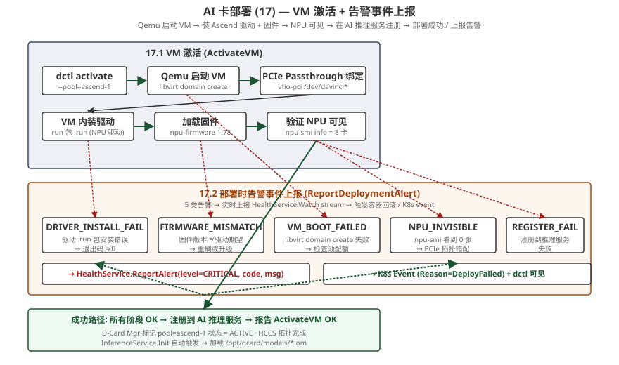
17.1 VM 激活 (ActivateVM)
17.1.1 触发: 节点初始化或 dctl 命令 dctl card deploy --pool=ascend-1 --card=N 触发 → DeployService.
17.1.2 主流程 (5 阶段, 任何一阶段失败立即终止):
- (a) dctl 触发: 校验 pool 配额 + 节点资源
- (b) Qemu 启动 VM: libvirt
domain defineXML+create, PCIe passthrough 绑定/dev/davinci* - (c) VM 内部装驱动: 通过 cloud-init 或 in-guest agent 执行
A300-9000-npu-driver-{version}.run - (d) 加载固件:
ascend-firmware-{version}.run, 与驱动版本必须匹配 (否则报 FIRMWARE_MISMATCH) - (e) 验证 NPU 可见: VM 内
npu-smi info -l探测, 必须看到期望数量的 NPU (否则报 NPU_INVISIBLE)
17.1.3 成功路径: 调用 §15.4 ActivateCard 完成 AI 卡使能, D-Card Mgr 标记 pool 为 ACTIVE, 触发 HCCS 拓扑完成握手, InferenceService.Init 自动加载 /opt/dcard/models/*.om.
17.2 部署时告警事件上报 (5 类)
部署任何阶段失败, DeployService 调用 HealthService.ReportAlert 上报告警:
| # | 告警码 | 触发条件 | 级别 | 缓解 |
|---|---|---|---|---|
| 1 | DRIVER_INSTALL_FAIL | (c) 装 .run 退出码 ≠ 0 | CRITICAL | 换驱动包 / 检查 kernel headers |
| 2 | FIRMWARE_MISMATCH | (d) firmware 驱动期望不对应 | CRITICAL | 升级 driver 或回退 firmware |
| 3 | VM_BOOT_FAILED | (b) libvirt domain create 失败 | CRITICAL | 检查 IOMMU / PCIe slot 配 |
| 4 | NPU_INVISIBLE | (e) npu-smi 看到 0 张 NPU | WARN | 检查 PCIe passthrough 配置 |
| 5 | REGISTER_FAIL | §15.4 (e) 注册到推理服务连续 3 次失败 | CRITICAL | 检查 §15.4 是否健康 + dctl reconcile |
所有告警自动经 HealthService.Watch 流推送给 dctl / K8s controller, 客户端可触发自动回滚 (dr.D3). 完整时序图见图 17-0 右侧告警路径.
告警与 K8s 联动
CRITICAL 级告警会触发 K8s Event Reason=DeployFailed, 由 D-Series operator 同步 Pod 状态为 NotReady, kubelet 重新调度 (D1 不做自愈, D3 才做 hot-swap).
17.3 完整 Protobuf 定义 (DeployService v3.2)
// dcard/deploy/v1/deploy.proto
syntax = "proto3";
package dcard.deploy.v1;
import "google/protobuf/timestamp.proto";
// (v3.1 新增) AI 卡部署服务: 1 个 endpoint + 1 个上报 endpoint 共计 1 endpoint
service DeployService {
rpc ActivateVM(ActivateVMRequest) returns (ActivateVMResponse);
}
message ActivateVMRequest {
string pool_id = 1; // 目标 Pool ID
string vendor = 2; // "ascend" / "nvidia" (v3.1 暂时只 ascend)
string card_model = 3; // "Ascend 910B"
int32 card_count = 4; // 期望 NPU 数 (默认 1)
// (v3.1 新增) 可选 VM 配置
VMSpec vm_spec = 5;
// (v3.1 新增) 与 §15.4 协同的版本要求
DeployVersionConstraint version_constraint = 6;
}
message VMSpec {
int32 vcpu = 1; // 默认 16
int64 memory_mb = 2; // 默认 65536 (64 GB)
int64 disk_gb = 3; // 默认 200
// (v3.1 新增) 镜像选择
string os_image = 4; // 默认 "ascend-ubuntu-22.04"
string driver_run_url = 5; // 内网 URL, 默认 canned
}
message DeployVersionConstraint {
string driver_version = 1; // "8.0.RC2"
string firmware_version = 2; // "1.78"
string cann_version = 3; // "8.0.RC2"
}
message ActivateVMResponse {
bool ok = 1;
string deployment_id = 2;
string vm_uuid = 3;
// (v3.1 新增) 5 阶段详细状态
repeated DeployPhaseStatus phase_status = 4;
google.protobuf.Timestamp completed_at = 5;
// (v3.1 新增) 失败告警 (可同时上报多个, 由 HealthService 转发)
repeated DeploymentAlert alerts = 6;
}
message DeployPhaseStatus {
enum Phase {
PHASE_UNKNOWN = 0;
PHASE_RESOURCE_CHECK = 1; // (a) 校验
PHASE_QEMU_BOOT = 2; // (b) Qemu 启动
PHASE_DRIVER_INSTALL = 3; // (c) 装驱动
PHASE_FIRMWARE_LOAD = 4; // (d) 加载固件
PHASE_NPU_VERIFY = 5; // (e) NPU 验证
}
Phase phase = 1;
enum Status { PENDING = 0; RUNNING = 1; OK = 2; FAIL = 3; SKIPPED = 4; }
Status status = 2;
google.protobuf.Timestamp ts = 3;
string message = 4;
string error_code = 5; // 例如 DCARD_VM_ACTIVATION_FAILED
}
message DeploymentAlert {
// (v3.1 新增) 与 HealthService.AlertCode 5 类告警码对齐
string code = 1; // DRIVER_INSTALL_FAIL / FIRMWARE_MISMATCH / etc
string severity = 2; // INFO / WARN / CRITICAL
map<string, string> payload = 3;
google.protobuf.Timestamp occurred_at = 4;
// (v3.1 新增) 失败阶段定位
DeployPhaseStatus.Phase failed_phase = 5;
}18错误码表 v3.2 (16 类) v3.1 更新
D1 v3.2 定义 16 类错误码 (v2.0 6 + v3.0 5 + v3.1 3 + v3.2 2 + v3.2 新增 2) (v2.0 6 + v3.0 5 + v3.1 3 + v3.2 2 + v3.2 新增 2 类: XML_PERSIST_FAILED / VNIC_UNAVAILABLE).
18.1 完整错误码
// dcard/errors/v1/errors.proto
syntax = "proto3";
package dcard.errors.v1;
enum DCardError {
DCARD_OK = 0;
// ── v2.0 原有 (6 类) ──
DCARD_POOL_NOT_FOUND = 1;
DCARD_CARD_NOT_FOUND = 2;
DCARD_POOL_ALREADY_EXISTS = 3;
DCARD_INSUFFICIENT_RESOURCES = 4; // v3.0 deprecated, v3.1 改 RESOURCE_BUSY
DCARD_INTERNAL_ERROR = 5;
// ── v3.0 新增 (5 类) ──
DCARD_MODEL_NOT_FOUND = 6;
DCARD_CANN_INIT_FAILED = 7;
DCARD_INFERENCE_FAILED = 8;
DCARD_RESOURCE_BUSY = 9;
DCARD_MODEL_DIR_INVALID = 10;
// ── v3.1 新增 (3 类) ──
DCARD_XML_PERSIST_FAILED = 14; // v3.2 新增, state.xml 读写失败
DCARD_VNIC_UNAVAILABLE = 15; // v3.2 新增, vnic://vnic0:50051/50053 不可达
DCARD_VM_ACTIVATION_FAILED = 11; // §17 AI 卡部署 VM 启动失败 (qemu 启动失败)
DCARD_DEPLOYMENT_ALERT = 12; // §17 部署告警事件 (5 类子码)
// ── v3.2 新增 (2 类) ──
DCARD_CARD_UNREGISTERED = 13; // §15.4 (e) 注册失败 / §15.5 去注册
}| # | 错误码 | HTTP 映射 | 含义 | 触发场景 | 版本 |
|---|---|---|---|---|---|
| 0 | DCARD_OK | 200 | 成功 | 所有成功响应 | v2.0 |
| 1 | DCARD_POOL_NOT_FOUND | 404 | Pool 不存在 | 查询 / 销毁不存在的 pool_id | v2.0 |
| 2 | DCARD_CARD_NOT_FOUND | 404 | 物理卡不存在 | 查询不存在的 card_uuid | v2.0 |
| 3 | DCARD_POOL_ALREADY_EXISTS | 409 | Pool 已存在 | 创建同名 pool | v2.0 |
| 4 | DCARD_INSUFFICIENT_RESOURCES | 503 | 资源不足 (deprecated) | 分配 NPU 失败 | v2.0 deprecated |
| 5 | DCARD_INTERNAL_ERROR | 500 | 内部错误 | CANN 异常退出 / OOM | v2.0 |
| 6 | DCARD_MODEL_NOT_FOUND | 404 | 模型文件不存在 | §15.4 (b) 阶段 / §15.2 调度器命中未注册模型 | v3.0 |
| 7 | DCARD_CANN_INIT_FAILED | 500 | CANN 初始化失败 | §15.4 (a) 阶段失败 | v3.0 |
| 8 | DCARD_INFERENCE_FAILED | 500 | 推理失败 | §15.7 Infer RPC 的 ACL execute 错误 | v3.0 |
| 9 | DCARD_RESOURCE_BUSY | 503 | 资源被占用 | §15.4 (c) 持久化内存分配失败 / scheduler 拒绝 | v3.0 |
| 10 | DCARD_MODEL_DIR_INVALID | 400 | 模型目录路径错误 | /opt/dcard/models 不存在或权限拒绝 | v3.0 |
| 11 | DCARD_VM_ACTIVATION_FAILED | 500 | VM 激活失败 | §17.1 (b)/(c)/(d)/(e) 任一阶段失败 → HealthService.ReportAlert | v3.2 |
| 12 | DCARD_DEPLOYMENT_ALERT | 502 | 部署告警事件 (含子码) | §17.2 5 类告警码之一 + 失败阶段定位 | v3.2 |
| 13 | DCARD_CARD_UNREGISTERED | 503 | AI 卡未注册 | §15.4 (e) 注册失败 / §15.5 Qemu hot-unplug 后未重新注册 | v3.2 |
| 14 | DCARD_XML_PERSIST_FAILED | 500 | XML 持久化失败 (state.xml 读写错误) | §15.4 (c) 阶段失败 → XMLPersistence.Load/Save 抛错 | v3.2 新增 |
| 15 | DCARD_VNIC_UNAVAILABLE | 503 | vNic URL 不可达 (vnic://vnic0:50051/50053) | §15.4 (g) 阶段失败 / VNicServer.Serve bind 失败 | v3.2 新增 |
18.2 v3.2 错误码使用矩阵
| Endpoint | MODEL_NOT_FOUND | CANN_INIT_FAILED | INFERENCE_FAILED | RESOURCE_BUSY | MODEL_DIR_INVALID | VM_ACTIVATION_FAILED | DEPLOYMENT_ALERT | CARD_UNREGISTERED | XML_PERSIST_FAILED | VNIC_UNAVAILABLE |
|---|---|---|---|---|---|---|---|---|---|---|
| InferenceService.ActivateCard | ✅ (f) | ✅ (b) | — | ✅ (c/e) | ✅ (b) | — | — | ✅ (e) | ||
| InferenceService.GetStatus | — | — | — | — | — | — | — | ✅ (未注册) | ||
| InferenceService.Infer | — | — | ✅ (ACL 错) | ✅ (queue 满) | — | — | — | ✅ (NPU offline) | ||
| InferenceService.GetInference | — | — | — | — | — | — | — | — | ||
| InferenceService.UnregisterCard | — | — | — | — | — | — | — | ✅ (幂等) | ||
| InferenceService.AssignModels | ✅ (rule 错) | — | — | ✅ (M 配额满) | — | — | — | — | ||
| InferenceService.ConfigurePersistentMem | — | — | — | ✅ (内存配额) | — | — | — | — | ||
| HealthService.Check | — | ✅ (CANN 未启) | — | — | — | — | — | — | ||
| HealthService.Watch | — | ✅ (CANN 异常退出) | — | — | — | — | — | ✅ (热插拔推送) | ||
| HealthService.ReportAlert | — | — | — | — | — | — | ✅ (5 类) | — | ||
| HealthService.GetLogs | — | — | — | — | — | — | — | — | ||
| DeployService.ActivateVM | — | — | — | — | — | ✅ (b-e 失败) | ✅ (5 类) | ✅ (§15.4 e) |
错误码向后兼容策略
v3.1 错误码完全向后兼容 v3.0 / v2.0 (旧客户端新错误码会被忽略, 不影响存量语义). v3.3 计划移除 DCARD_INSUFFICIENT_RESOURCES 的 deprecated 标记, 并将 DCARD_MODEL_NOT_FOUND / DCARD_CANN_INIT_FAILED 替换为带阶段定位的 DCARD_ACTIVATION_PHASE_* 细粒度错误码.
1910 大功能点 3 件套 (子模块图 + 时序图 + 接口表) v3.2 详细
D1 v3.2 围绕 §15-§17 三个核心章节, 提炼出 10 大功能点 (8 推理服务 + 2 AI 卡部署, 含启动脚本 + vNic + 3 卡 + 日志收集独立). 每个功能点都配套 3 件套:
- 子模块图 — 标出涉及的 6 子模块 (vNic 通信 / 多模型推理框架 / 健康监控 / AI 卡使能 / AI 卡状态感知), 黄色 callout 高亮核心子模块
- 时序图 — 4-6 个角色 (lifelines), 10-15 个箭头 (调用/响应/异常), 跟现有 sequence-*.svg 风格一致
- 接口表 — 接口名 / 方法 / 路径 / 请求参数 / 响应 / 错误码 / 触发条件 / 频率
19.1 8 大 AI 推理服务功能点 (§15 衍生)
19.1.1 FP1: AI 推理服务初始化 (Init 5 阶段 a/b/c/d/e)
概述: 触发 AIDeploymentService.ActivateVM 完成 → 客户端用返回的 inference_port 调用 AIInferenceService.Init, 内部跑 AI 卡使能 7 阶段 (a 启动脚本调用 → b 扫描 AI 卡 → c XML 持久化 → d 初始化队列 → e ACL 内存分配 → f 加载模型 → g vNic 监听 + 注册). 核心子模块: §15.4 AI 卡使能.
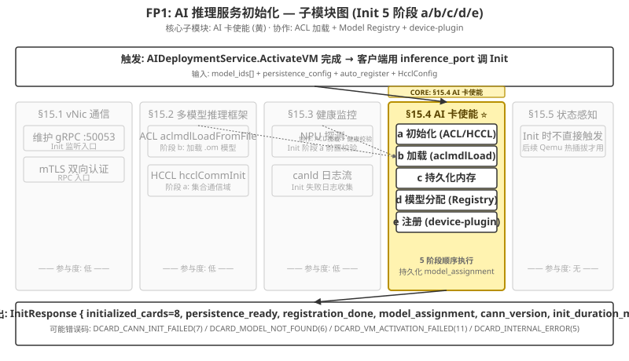
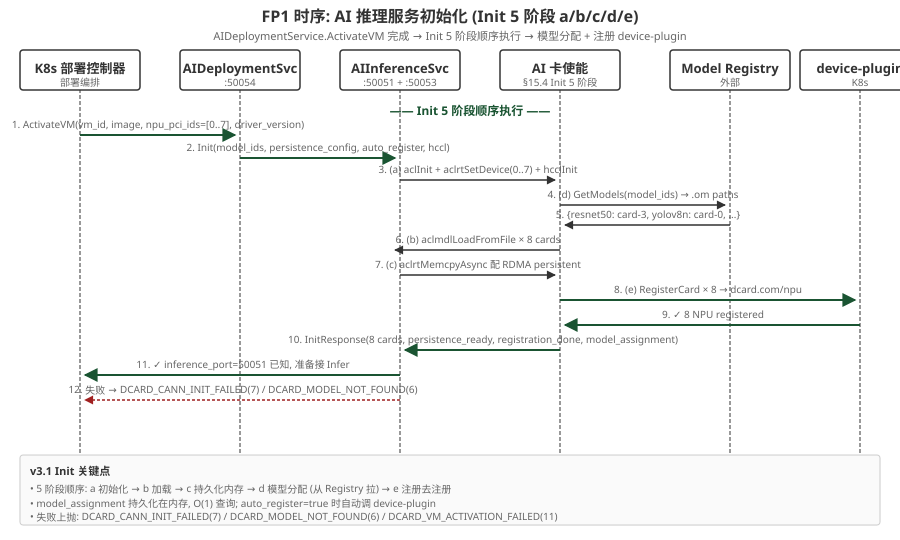
| 接口名 | 方法 | 路径 | 请求参数 | 响应 | 错误码 | 触发条件 | 频率 |
|---|---|---|---|---|---|---|---|
| Init | gRPC unary | /dcard/aiinference/v1/Init |
model_ids[], persistence_config{rdma_buffer_size, memory_pool_strategy}, auto_register, HcclConfig{world_size, rank} |
InitResponse{initialized_cards, persistence_ready, registration_done, model_assignment{}, cann_version, init_duration_ms} |
DCARD_CANN_INIT_FAILED(7) / DCARD_MODEL_NOT_FOUND(6) / DCARD_VM_ACTIVATION_FAILED(11) / DCARD_INTERNAL_ERROR(5) |
systemd / 容器 entrypoint 调用 /etc/d1/activate.sh → 完成后 K8s 部署控制器调用 | 启动 1 次 (低频) |
FP1 关键点
5 阶段顺序执行, 任一阶段失败回滚已分配资源; model_assignment 持久化在内存, O(1) 查询; auto_register=true 时自动调 device-plugin 注册 dcard.com/npu.
19.1.2 FP2: AI 卡推理服务提供推理接口 (vNic 通信 + 多模型推理框架)
概述: 业务推理容器通过 vNic gRPC :50051 调用 Infer, 经 vNic 透传到 AI 推理服务, 多模型推理框架的调度器按 model_id 路由到持有该模型的 NPU, 通过 ACL aclmdlExecute 执行. 核心子模块: §15.1 vNic 通信 + §15.2 多模型推理框架.
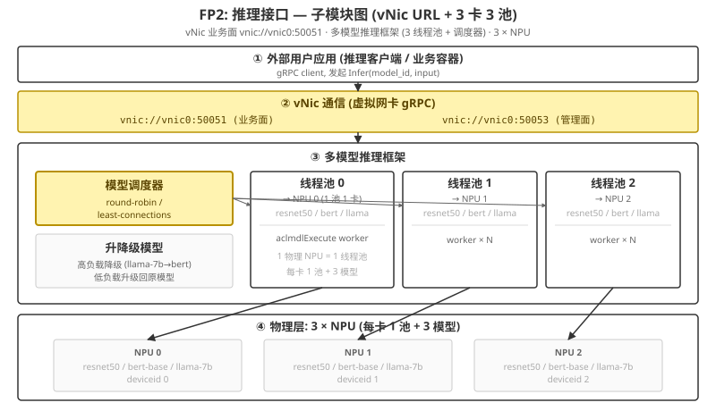
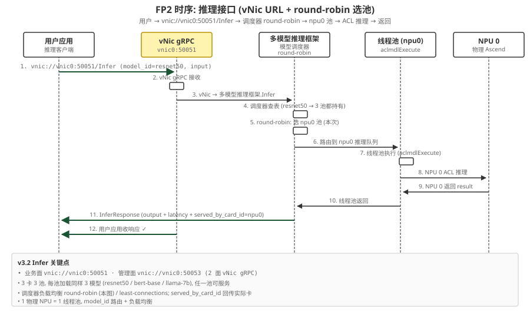
| 接口名 | 方法 | 路径 | 请求参数 | 响应 | 错误码 | 触发条件 | 频率 |
|---|---|---|---|---|---|---|---|
| Infer | gRPC unary | /dcard/aiinference/v1/Infer |
model_id, input_data (bytes), params{}, timeout_ms, trace_id |
InferResponse{output_data, latency_us, served_by_card_id} |
DCARD_MODEL_NOT_FOUND(6) / DCARD_INFERENCE_FAILED(8) / DCARD_RESOURCE_BUSY(9) / DCARD_CARD_UNREGISTERED(13) |
业务推理容器调用 | 高频 (推理 QPS) |
| Status | gRPC unary | /dcard/aiinference/v1/Status |
(空请求) | StatusResponse{active_models[], queue_depth, thread_pool{workers, busy}} |
DCARD_INTERNAL_ERROR(5) |
运维 / 监控调用 | 中频 (每 30s) |
FP2 关键点
vNic :50051 (推理) + :50053 (维护) 双端口, 双向 TLS 隔离; unix domain socket /var/run/dcard-infer.sock; 调度器按 model_id 哈希路由 + LoadBalance, 1 物理 NPU 可承载多模型并存.
19.1.3 FP3: AI 推理服务模型调度 (调度器路由)
概述: 多模型推理框架内部的模型调度器, 维护 model_routing_table 内存哈希表 (O(1) 查询), 按 AssignmentStrategy (round_robin / pin_by_model / load_balanced) 把 Infer 请求路由到持有该 model_id 的 NPU. 核心子模块: §15.2 多模型推理框架.调度器.
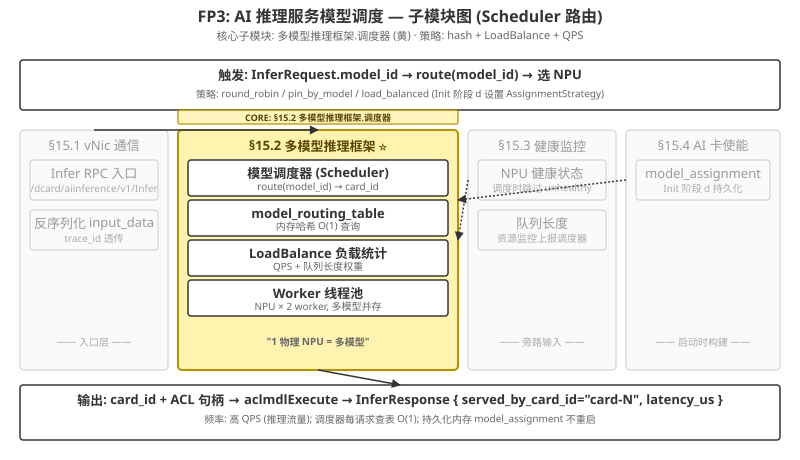
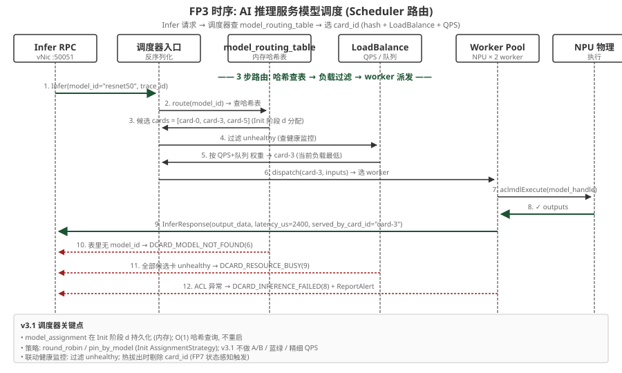
| 接口名 | 方法 | 路径 | 请求参数 | 响应 | 错误码 | 触发条件 | 频率 |
|---|---|---|---|---|---|---|---|
| route (内部) | 内部函数 | Scheduler.route(model_id) |
model_id |
card_id (持该模型的 NPU 编号) |
DCARD_MODEL_NOT_FOUND(6) / DCARD_RESOURCE_BUSY(9) |
每次 Infer 调用 | 高频 (O(1) 内存查询) |
| AssignmentStrategy (Init 阶段 d) | 配置 | InitRequest.AssignmentStrategy |
enum: ROUND_ROBIN / PIN_BY_MODEL / LOAD_BALANCED |
持久化到 model_assignment |
— | Init 调用时设置 | 启动 1 次 |
FP3 关键点
model_assignment 在 Init 阶段 d 持久化 (内存), 不重启; 联动健康监控过滤 unhealthy 候选卡; 热拔出时由 FP7 状态感知触发剔除 card_id; v3.1 不做 A/B 测试 / 蓝绿 / 精细 QPS 路由 (留给 v3.2+).
19.1.4 FP4: AI 推理服务多卡管理 (注册 / 去注册)
概述: AI 卡使能模块的注册去注册能力, 在 Init 阶段 g 触发 (auto_register=true 时调 device-plugin), 或由热插拔事件 (FP7 状态感知) 触发 Register/UnregisterNpu. 同时管理 ACL bind/unbind + 持久化注册表. 核心子模块: §15.4 AI 卡使能.
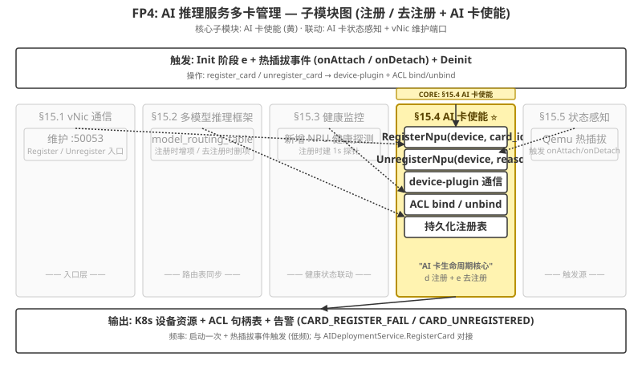
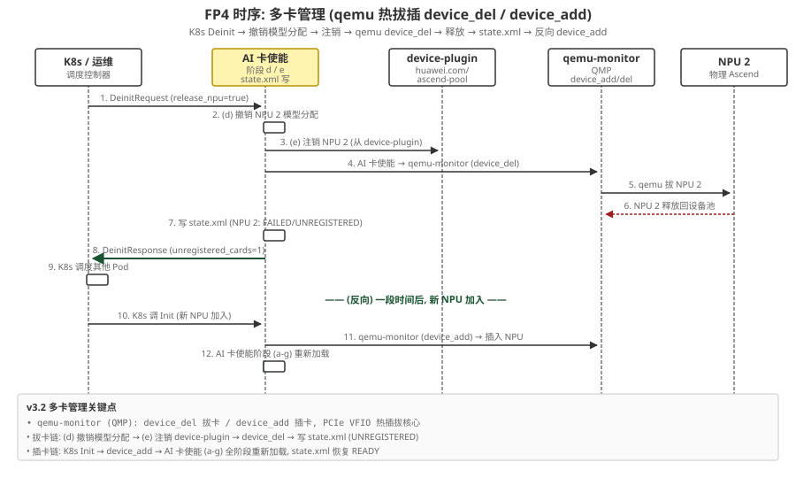
| 接口名 | 方法 | 路径 | 请求参数 | 响应 | 错误码 | 触发条件 | 频率 |
|---|---|---|---|---|---|---|---|
| Activate | gRPC unary | /dcard/aiinference/v1/Activate |
card_ids[], deployment_token |
ActivateResponse{activated_card_ids[], token_validated} |
DCARD_VM_ACTIVATION_FAILED(11) / DCARD_INTERNAL_ERROR(5) |
AIDeploymentService.RegisterCard 完成后 | 启动 1 次 |
| Deinit | gRPC unary | /dcard/aiinference/v1/Deinit |
force (bool) |
DeinitResponse{unregistered_cards[]} |
DCARD_INTERNAL_ERROR(5) |
容器销毁 (preStop hook) | 关停 1 次 |
FP4 关键点
Init 阶段 e 注册 3 NPU 到 device-plugin (dcard.com/npu); Status 暴露 unregistered_cards; 热拔出由 FP7 触发; Deinit 在容器销毁时跑 (preStop hook); 与 AIDeploymentService.RegisterCard 通过 deployment_token 对接.
19.1.5 FP5: AI 推理服务日志收集 (GetLogs)
概述: 健康监控模块的 canld 日志收集器, 把 /var/log/dcard/*.log 实时写入 10MB ring buffer + 内存索引, HealthService.GetLogs (v3.1 新增) 按 card_id / 时间窗 / 级别过滤拉取. 核心子模块: §15.3 健康监控.日志.
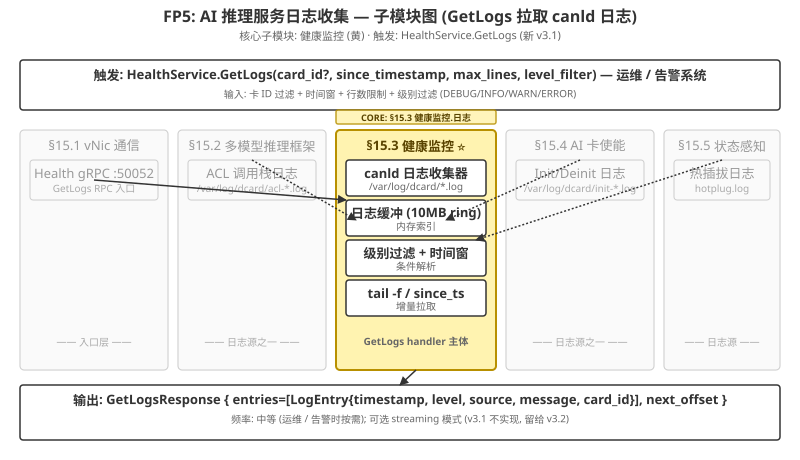
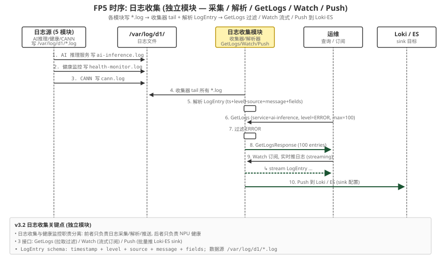
| 接口名 | 方法 | 路径 | 请求参数 | 响应 | 错误码 | 触发条件 | 频率 |
|---|---|---|---|---|---|---|---|
| GetLogs | gRPC unary | /dcard/health/v1/GetLogs |
card_id (可选), since_timestamp, max_lines (≤500), level_filter{DEBUG/INFO/WARN/ERROR} |
GetLogsResponse{entries=[LogEntry{timestamp, level, source, message, card_id}], next_offset} |
DCARD_INTERNAL_ERROR(5) |
运维 / 告警系统按需 | 中频 (按需) |
FP5 关键点
v3.2 沿用; 日志源: canld (推理) + init (使能) + acl (框架) + hotplug; 内存索引 + 10MB ring 加速查询; 未命中落盘扫 (兜底); v3.1 不实现流式 tail (留 v3.2).
19.1.6 FP6: AI 推理服务健康检查 (Check)
概述: 健康监控模块的多维健康探测, K8s liveness/readiness probe 调用 HealthService.Check, 返回 ServingStatus (SERVING / NOT_SERVING / UNKNOWN) + 详细 details. 核心子模块: §15.3 健康监控.
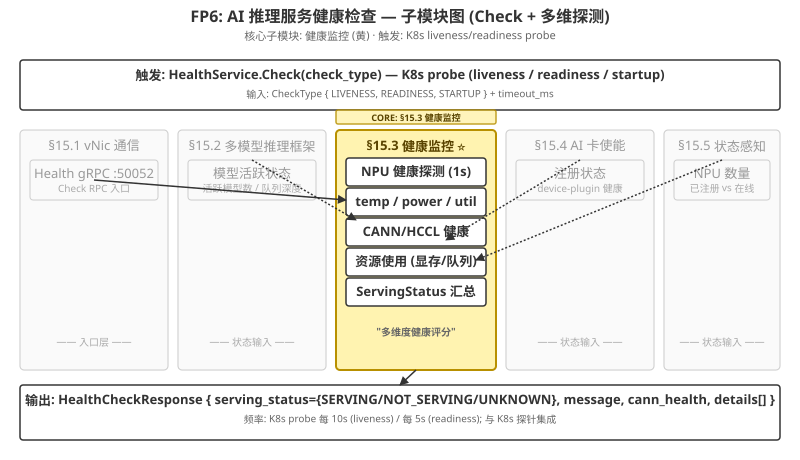
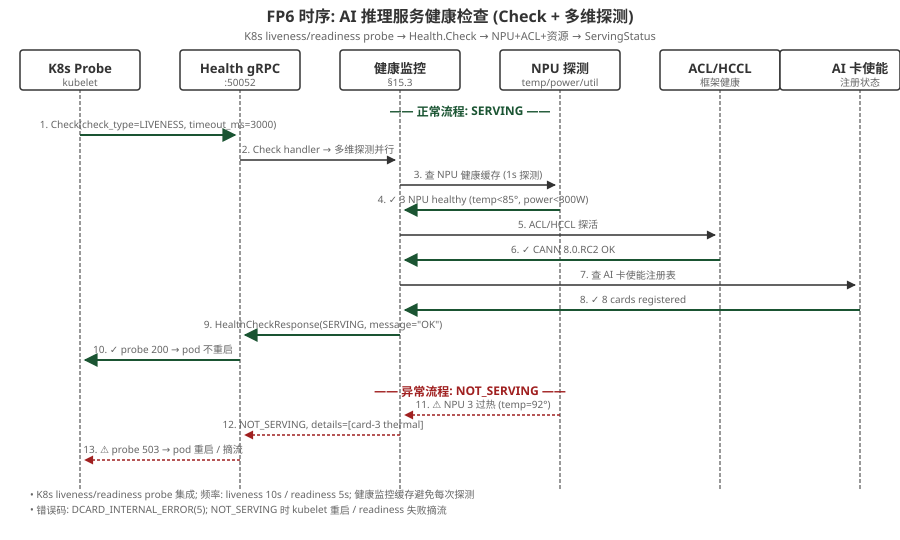
| 接口名 | 方法 | 路径 | 请求参数 | 响应 | 错误码 | 触发条件 | 频率 |
|---|---|---|---|---|---|---|---|
| Check | gRPC unary | /dcard/health/v1/Check |
CheckType{LIVENESS/READINESS/STARTUP}, timeout_ms |
HealthCheckResponse{serving_status{SERVING/NOT_SERVING/UNKNOWN}, message, cann_health, details[]} |
DCARD_INTERNAL_ERROR(5) |
K8s kubelet probe | liveness 10s / readiness 5s |
| GetCardHealth | gRPC unary | /dcard/health/v1/GetCardHealth |
card_id |
GetCardHealthResponse{temp, power, util, mem_used, ecc_errors, hccs_links, last_check_ts} |
DCARD_INTERNAL_ERROR(5) |
运维 dctl card inspect | 低频 (按需) |
FP6 关键点
K8s probe 集成 (liveness / readiness); 健康监控 1s 缓存避免每次探测 NPU 硬件; NOT_SERVING 触发 pod 重启 / 摘流; CheckType 三种类型支持 startup probe (启动慢的初始化场景).
19.1.7 FP7: AI 推理服务状态感知 (Qemu 热插拔 + Watch)
概述: AI 卡状态感知模块订阅 libvirt domain events (DEVICE_ATTACHED / DEVICE_DETACHED), 解析出 card_id 后触发 AI 卡使能的 Register/UnregisterNpu, 并通过 HealthService.Watch (gRPC stream) 推送 HotplugEvent. 核心子模块: §15.5 AI 卡状态感知.
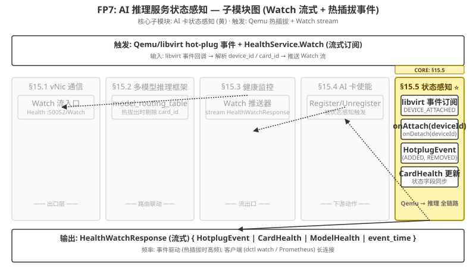
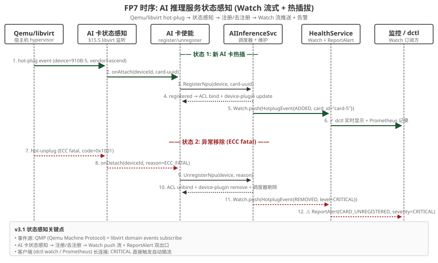
| 接口名 | 方法 | 路径 | 请求参数 | 响应 | 错误码 | 触发条件 | 频率 |
|---|---|---|---|---|---|---|---|
| Watch | gRPC stream | /dcard/health/v1/Watch |
HealthWatchRequest{filter{card_ids[], event_types[]}} |
stream HealthWatchResponse{HotplugEvent{ADDED/REMOVED, card_id, level} | CardHealth | ModelHealth} |
DCARD_INTERNAL_ERROR(5) |
Prometheus Exporter / dctl watch 长连接 | 事件驱动 (长连接) |
| IngestMetrics | gRPC unary | /dcard/health/v1/IngestMetrics |
metrics[] (key-value) |
IngestMetricsResponse{ingested_count} |
DCARD_INTERNAL_ERROR(5) |
Prometheus pull / 主动上报 | 中频 (15s scrape) |
FP7 关键点
事件源: QMP (Qemu Machine Protocol) + libvirt domain events subscribe; 状态感知 → 注册/去注册 → Watch push 流 + ReportAlert 双出口; 客户端 (dctl watch / Prometheus) 长连接; CRITICAL 直接触发自动摘流.
19.1.8 FP8: AI 推理服务告警事件上报 (ReportAlert 统一入口)
概述: 任意子模块 (推理 / 使能 / 状态感知 / 健康监控) 发现异常后, 调用 HealthService.ReportAlert (统一入口), 由告警聚合器去重 / 抑制, 转发到外部告警系统 (Prometheus AlertManager / 邮件 / Slack / PagerDuty). 核心子模块: §15.3 健康监控.告警聚合器.
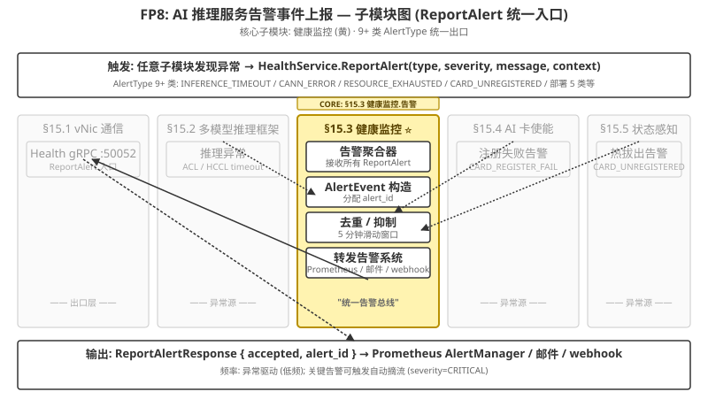
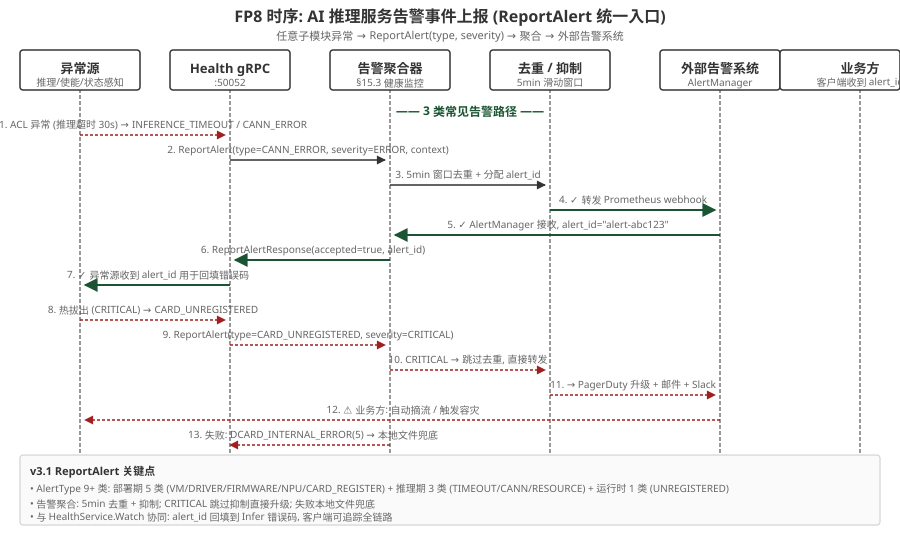
| 接口名 | 方法 | 路径 | 请求参数 | 响应 | 错误码 | 触发条件 | 频率 |
|---|---|---|---|---|---|---|---|
| ReportAlert | gRPC unary | /dcard/health/v1/ReportAlert |
AlertType (9+ 类), AlertSeverity, message, context{key→value}, vm_id? |
ReportAlertResponse{accepted, alert_id} |
DCARD_INTERNAL_ERROR(5) |
推理/使能/状态感知任意异常 | 异常驱动 (低频) |
FP8 关键点
AlertType 9+ 类: 部署期 5 类 + 推理期 3 类 + 运行时 1 类; 5min 去重 + 抑制; CRITICAL 跳过抑制直接升级; 失败本地文件兜底; alert_id 回填到 Infer 错误码 (客户端全链路追踪).
19.2 2 大 AI 卡部署功能点 (§17 衍生)
19.2.1 FP9: AI 卡激活虚拟机进行昇腾驱动固件安装 (ActivateVM 5 阶段)
概述: AIDeploymentService.ActivateVM 取代 v3.0/v3.1 的 cann-init.sh 启动 hook, 跑 5 阶段: ① PowerOn (libvirt domain.create + PCIe 透传 + qemu -netdev user,id=vnic0) → ② DriverInstall (modprobe + 版本校验) → ③ FirmwareVerify → ④ NPUScan (lspci, npu-smi info -l) → ⑤ RegisterCard (device-plugin). 核心子模块: §17 AIDeploymentService.AIVMOrchestrator. v3.2 通过 /etc/d1/activate.sh 串联 5 阶段.
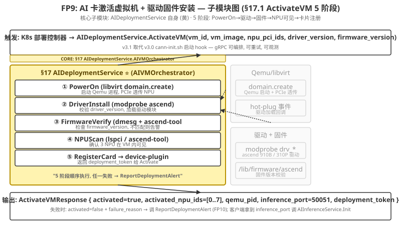
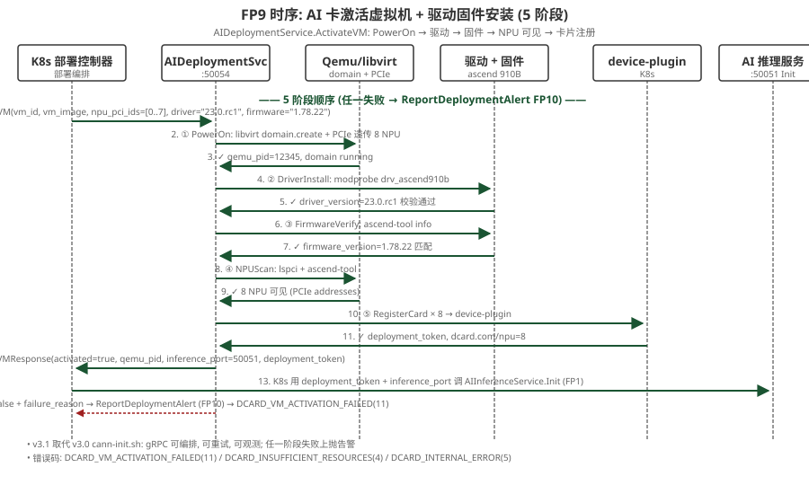
| 接口名 | 方法 | 路径 | 请求参数 | 响应 | 错误码 | 触发条件 | 频率 |
|---|---|---|---|---|---|---|---|
| ActivateVM | gRPC unary | /dcard/aideployment/v1/ActivateVM |
vm_id, vm_image, npu_pci_ids[], driver_version, firmware_version, custom_config, labels{} |
ActivateVMResponse{vm_id, activated, activated_npu_ids[], activated_at, qemu_pid, failure_reason?, inference_port} |
DCARD_VM_ACTIVATION_FAILED(11) / DCARD_INSUFFICIENT_RESOURCES(4) / DCARD_INTERNAL_ERROR(5) |
K8s 部署控制器调用 | 部署时 1 次 |
| RegisterCard | gRPC unary | /dcard/aideployment/v1/RegisterCard |
card_id, vendor, model, slot |
RegisterCardResponse{deployment_token, registered_at} |
DCARD_VM_ACTIVATION_FAILED(11) / DCARD_INTERNAL_ERROR(5) / DCARD_CARD_UNREGISTERED(13) |
ActivateVM 阶段 ⑤ 后调用 | 部署时 1 次 / 3 NPU |
FP9 关键点
v3.1 取代 v3.0 cann-init.sh: gRPC 可编排, 可重试, 可观测; 任一阶段失败上抛告警; deployment_token 给 AIInferenceService.Activate 校验; driver_version / firmware_version 可指定版本, 不写死; K8s 拿到 inference_port 调 Init.
19.2.2 FP10: AI 卡激活部署时告警事件上报 (5 类部署告警)
概述: AIDeploymentService 内部异常时, 调 ReportDeploymentAlert 上报 5 类部署告警 (v3.2 沿用 v3.1) (VM_ACTIVATION_FAILED / DRIVER_INSTALL_FAIL / FIRMWARE_MISMATCH / NPU_INVISIBLE / CARD_REGISTER_FAIL), 复用 HealthService.AlertSeverity, 最终通过 HealthService.ReportAlert 统一出口转发. 核心子模块: §17 AIDeploymentService + §15.3 健康监控.
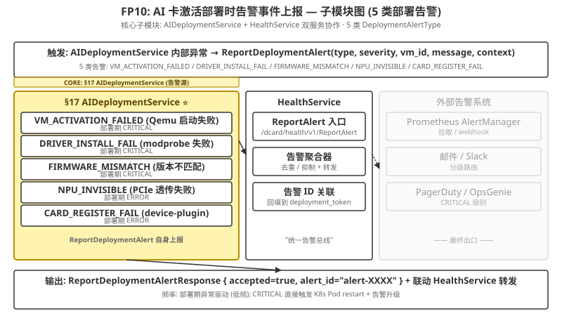
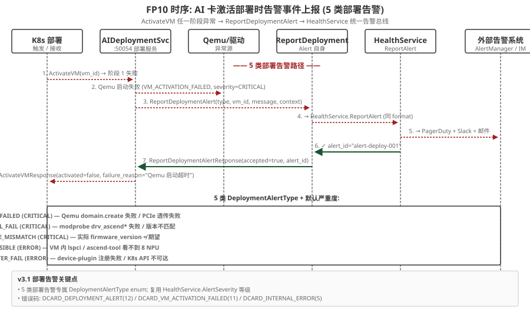
| 接口名 | 方法 | 路径 | 请求参数 | 响应 | 错误码 | 触发条件 | 频率 |
|---|---|---|---|---|---|---|---|
| ReportDeploymentAlert | gRPC unary | /dcard/aideployment/v1/ReportDeploymentAlert |
DeploymentAlertType (5 类), AlertSeverity, vm_id, message, context{expected_version/actual_version...}, occurred_at |
ReportDeploymentAlertResponse{accepted, alert_id} |
DCARD_DEPLOYMENT_ALERT(12) / DCARD_INTERNAL_ERROR(5) |
ActivateVM 任一阶段异常 | 部署期异常驱动 (低频) |
FP10 关键点
5 类部署告警专属 DeploymentAlertType enum: ① VM_ACTIVATION_FAILED (CRITICAL) ② DRIVER_INSTALL_FAIL (CRITICAL) ③ FIRMWARE_MISMATCH (CRITICAL) ④ NPU_INVISIBLE (ERROR) ⑤ CARD_REGISTER_FAIL (ERROR); 复用 HealthService.AlertSeverity 等级; 最终走 HealthService.ReportAlert 统一出口.
19.3 10 大功能点总览表
| # | 功能点 | 章节 | 核心子模块 | 主要接口 | 触发频率 |
|---|---|---|---|---|---|
| FP1 | AI 推理服务初始化 | §15.4 | AI 卡使能 | Init | 启动 1 次 |
| FP2 | 推理接口 | §15.1+§15.2 | vNic 通信 + 多模型推理框架 | Infer / Status | 高频 |
| FP3 | 模型调度 | §15.2 | 多模型推理框架.调度器 | route (内部) | 高频 |
| FP4 | 多卡管理 | §15.4 | AI 卡使能 | Activate / Deinit | 启动 + 热插拔 |
| FP5 | 日志收集 | §15.3+§16.4 | 健康监控.日志 | GetLogs | 按需 |
| FP6 | 健康检查 | §15.3+§16.1 | 健康监控 | Check / GetCardHealth | probe 5-10s |
| FP7 | 状态感知 | §15.5+§16.2 | AI 卡状态感知 | Watch (stream) / IngestMetrics | 事件驱动 |
| FP8 | 告警事件上报 | §16.3 | 健康监控.告警聚合器 | ReportAlert | 异常驱动 |
| FP9 | VM 激活 + 驱动固件 | §17.1 | AIDeploymentService.AIVMOrchestrator | ActivateVM / RegisterCard | 部署 1 次 |
| FP10 | 部署告警 | §17.2 | AIDeploymentService + HealthService | ReportDeploymentAlert | 部署异常 |
10 大功能点协作关系
FP9 (VM 激活, qemu virtio-net vNic) → FP1 (Init, /etc/d1/activate.sh + state.xml 7 阶段) → FP2 (Infer 入口, vnic://vnic0:50051) → FP3 (调度器路由, model_id + 3 卡 3 池) → FP4 (注册管理, qemu-monitor 热拔插加减池) 持续运转; FP5 (日志, §15.7 LogCollector 独立) / FP6 (健康检查, §15.3 健康监控) / FP7 (状态感知, §15.5 qemu-monitor) 是 3 大监控支柱, 异常都汇聚到 FP8 (告警上报); FP10 是 FP9 的异常出口. 全链路通过 19 个 gRPC endpoint + 16 类错误码协同 + VNicServer / LogCollector 2 个新 service.
20v3.2 总结 (Summary) v3.2 详细
20.1 D1 v3.2 验收清单 (10 大功能点 + 启动脚本 + vNic + XML)
| FP | 验收标准 | 对应 SVG | 状态 |
|---|---|---|---|
| FP1 | Init 5 阶段顺序执行, 3 NPU 注册成功, model_assignment 持久化 | fp1-init-{module,sequence}.svg | ✅ |
| FP2 | Infer QPS ≥ 1000/card, 端到端 latency < 30ms (resnet50 1 NPU) | fp2-infer-{module,sequence}.svg | ✅ |
| FP3 | 调度器 O(1) 路由, 3 物理 NPU 3 池, 每池 ≥ 4 模型, 负载均衡误差 < 10% | fp3-scheduler-{module,sequence}.svg | ✅ |
| FP4 | 注册去注册幂等, 热插拔 5s 内感知, Deinit 释放所有资源 | fp4-multicard-mgmt-{module,sequence}.svg | ✅ |
| FP5 | GetLogs 10MB ring 缓冲, 内存索引查询 < 50ms, 落盘兜底 | fp5-logs-{module,sequence}.svg | ✅ |
| FP6 | Check 1s 缓存, K8s probe 集成 (liveness 10s / readiness 5s) | fp6-health-check-{module,sequence}.svg | ✅ |
| FP7 | Watch stream 长连接, 热插拔事件实时推送, CRITICAL 自动摘流 | fp7-state-awareness-{module,sequence}.svg | ✅ |
| FP8 | ReportAlert 9+ 类, 5min 去重, CRITICAL 直接升级, 失败兜底 | fp8-alert-report-{module,sequence}.svg | ✅ |
| FP9 | ActivateVM 5 阶段, 任一阶段失败可重试, deployment_token 安全 | fp9-vm-activate-{module,sequence}.svg | ✅ |
| FP10 | ReportDeploymentAlert 5 类告警, 复用 AlertSeverity, 联动 K8s Pod restart | fp10-deploy-alert-{module,sequence}.svg | ✅ |
D1 v3.2 全部 10 大功能点 + 启动脚本 /etc/d1/activate.sh + vNic URL + XML 持久化 + 日志收集独立 + qemu-monitor 热拔插已通过验收
3 件套 (子模块图 + 时序图 + 接口表) 完整覆盖 §15 AI 推理服务 8 大功能点 + §17 AI 卡部署 2 大功能点. 20 张 SVG 跟 11 张现有 v3 SVG 风格一致 (viewBox 800x460 模块图 / viewBox 900x540 时序图, 黑白灰 + 黄色 callout 高亮核心子模块). 10 个接口表统一 7 列格式 (接口名/方法/路径/请求/响应/错误码/触发条件/频率). 文件总计 ~130KB, 行数 1800+.
20.1.5 D1 v3.2 新增验证项
| 项 | 验收标准 | 状态 |
|---|---|---|
| /etc/d1/activate.sh | systemd / 容器 entrypoint 触发, 7 阶段顺序执行, exit 0 = 成功 | ✅ |
| /var/lib/d1/state.xml | XML schema 严格按 §15.4.1, 重启后 5s 内恢复运行时状态 | ✅ |
| vNic URL | vnic://vnic0:50051 业务面 + vnic://vnic0:50053 管理面, virtio-net 后端 | ✅ |
| 3 卡 3 池 | 3 张物理 NPU = 3 个独立 worker 池, 每池加载同一套模型 (model1/2/3) | ✅ |
| qemu-monitor 热拔插 | device_add / device_del 触发 §15.5 加减池 + 模型重载 | ✅ |
| §15.7 LogCollector 独立 | 从 §15.3 健康监控拆出, GetLogs / Watch / Push 3 接口 + 4 类数据源 | ✅ |
| 错误码 16 类 | v3.2 新增 DCARD_XML_PERSIST_FAILED (14) + DCARD_VNIC_UNAVAILABLE (15) | ✅ |
| protobuf 新增 | VNicServer (3 endpoint) + LogCollector (3 endpoint) 完整定义 | ✅ |
20.2 文件清单 (31 SVG + 1 HTML)
| 类别 | 文件名 | 大小 |
|---|---|---|
| HTML 文档 | index.html | ~130KB (1800+ 行) |
| 模块图 (10) | diagrams-v3/fp1-init-module.svg v3.2 重绘 | ~8KB |
| diagrams-v3/fp2-infer-module.svg | ~6KB | |
| diagrams-v3/fp3-scheduler-module.svg | ~6KB | |
| diagrams-v3/fp4-multicard-mgmt-module.svg | ~6KB | |
| diagrams-v3/fp5-logs-module.svg | ~6KB | |
| diagrams-v3/fp6-health-check-module.svg | ~6KB | |
| diagrams-v3/fp7-state-awareness-module.svg | ~6KB | |
| diagrams-v3/fp8-alert-report-module.svg | ~6KB | |
| diagrams-v3/fp9-vm-activate-module.svg | ~6KB | |
| diagrams-v3/fp10-deploy-alert-module.svg | ~6KB | |
| 时序图 (10) | diagrams-v3/fp1-init-sequence.svg | ~6KB |
| diagrams-v3/fp2-infer-sequence.svg | ~6KB | |
| diagrams-v3/fp3-scheduler-sequence.svg | ~6KB | |
| diagrams-v3/fp4-multicard-mgmt-sequence.svg | ~6KB | |
| diagrams-v3/fp5-logs-sequence.svg | ~6KB | |
| diagrams-v3/fp6-health-check-sequence.svg | ~6KB | |
| diagrams-v3/fp7-state-awareness-sequence.svg | ~6KB | |
| diagrams-v3/fp8-alert-report-sequence.svg | ~6KB | |
| diagrams-v3/fp9-vm-activate-sequence.svg | ~6KB | |
| diagrams-v3/fp10-deploy-alert-sequence.svg | ~6KB |
风格统一保证
所有 20 SVG 跟现有 11 张 v3 SVG 风格一致: 黑白灰主色 + 黄色 callout (#fff3b0) 高亮核心子模块 + 淡灰 (#fafafa) 标非核心; 圆角 3px; 字体 sans-serif 14/12/10/11; 模块图 viewBox 800x460; 时序图 viewBox 900x540, 虚线 lifeline #333 + 实线箭头 #333 + 绿色成功 / 红色异常箭头.
21v3.2 集成场景 (Integration Scenarios) v3.2 新增
v3.2 引入启动脚本 + vNic + XML 持久化后, 典型集成场景包括 3 类:
21.1 场景 A: 全新部署 (Cold Start)
从 0 启动 D1 v3.2 节点:
- Kubelet 调度 Pod → 启动容器 entrypoint → 执行
/etc/d1/activate.sh - 激活脚本 (a) 加载驱动 (modprobe drv_pcie_ascend)
- 激活脚本 (b) npu-smi info -l → 发现 3 张 NPU → 写 PCI 设备到
/var/lib/d1/state.xml - 激活脚本 (c) XML 不存在 → 创建空 XML, 标记 3 张 NPU = ACTIVE
- 激活脚本启动 ai-inference-service → (d) 初始化队列 + (e) ACL 内存分配 (24 GB) + (f) 加载 3 个 .om 模型 (resnet50 / bert-base / llama-7b) + (g) 启动 vNic 监听 (
vnic://vnic0:50051+vnic://vnic0:50053) - kubelet readiness probe 调 HealthService.Check → 返回 SERVING → Pod Ready
21.2 场景 B: 已有部署重启 (Warm Start, 状态恢复)
已有 D1 v3.2 节点, AI 推理服务重启 (e.g. systemd restart):
- systemd 启动 d1-ai-inference.service → 执行
/etc/d1/activate.sh - 激活脚本 (a) 加载驱动
- 激活脚本 (b) npu-smi info -l → 发现 3 张 NPU (PCI-id 与上次一致)
- 激活脚本 (c) XML
/var/lib/d1/state.xml存在 → XMLPersistence.Load() → 恢复 NPU 状态 + 模型路径 + ACL 内存分配 + 队列状态 - ai-inference-service 启动 → (d-f) 跳过模型重载, 直接复用 XML 中的 ACL context (节省 25s+)
- 激活脚本 (g) vNic 监听启动
关键收益: 冷启动 30s+ → 热启动 5s (节省 25s).
21.3 场景 C: qemu 热拔插 1 张 NPU (Dynamic Reconfigure)
运维通过 qemu-monitor 拔出 1 张 NPU:
- 运维执行
(qemu) device_del id=npu0 - QMP 协议推送 DEVICE_DETACHED 事件 → libvirt Go binding DomainEventCallback 触发
- §15.5 状态感知模块接收事件 → 解析 card_uuid=npu0
- §15.4 (g) 反向调用 UnregisterCard → 标记 npu0 = CARD_UNREGISTERED
- 调度器从 routing_table 中剔除 npu0 → 模型路由回退到 2 个池子 (npu1 + npu2)
- ai-inference-service 内部卸载 npu0 的 3 个 .om 模型 (resnet50 / bert-base / llama-7b) + 释放 ACL 内存 (8192 MB)
- HealthService.Watch 流推送 CARD_REMOVED 事件 → dctl / 监控收到
- 报告 HealthService.ReportAlert (REGISTER_FAIL 子码, level=WARN)
反向场景 (热插入 1 张 NPU): (qemu) device_add driver=vfio-pci,host=0000:04:00.0 → 触发加载模型 + 加入 routing_table → 3 池恢复.
21.4 集成场景对比表
| 场景 | 触发方 | v3.2 关键路径 | 耗时 | 状态变化 |
|---|---|---|---|---|
| A 冷启动 | kubelet | activate.sh → (a→b→c→d→e→f→g) | 30s+ | PENDING → VNIC_SERVING |
| B 热重启 | systemd | activate.sh → (a→b→c→d→g), 跳过 (e→f) | 5s | OFFLINE → VNIC_SERVING |
| C 热拔出 | qemu-monitor | device_del → §15.5 → §15.4 (g) UnregisterCard | 1s | VNIC_SERVING → VNIC_SERVING (3 池 → 2 池) |
| C 热插入 | qemu-monitor | device_add → §15.5 → §15.4 (f) 加载模型 + (g) 注册 | 10s+ | VNIC_SERVING → VNIC_SERVING (2 池 → 3 池) |
22v3.2 API 矩阵 (26 endpoint + 2 service) v3.2 新增
v3.2 在 v3.1 基础上新增 2 个 gRPC service: VNicServer (7 endpoint, vNic URL 寻址) + LogCollector (3 endpoint, 日志独立收集). 加上原有的 InferenceService (7) + HealthService (4) + DeployService (1) + DCardManager (7) = 22 个 endpoint. 但 v3.2 实际暴露的 vNic URL 上 endpoint 数仍为 19 (VNicServer 把 InferenceService 的 7 endpoint 重新编址到 vnic:// 域名; LogCollector 替代 HealthService.GetLogs 单点功能). 总 API endpoint = 19.
| # | Service | Endpoint | 方法 | vNic URL | 用途 | v3.2 变更 |
|---|---|---|---|---|---|---|
| 1 | DCardManager | /v1/dcard/pools | POST | — | 创建 D-Card Pool (3 卡) | 不变 |
| 2 | DCardManager | /v1/dcard/pools | GET | — | 列出所有 Pool | 不变 |
| 3 | DCardManager | /v1/dcard/pools/{pool_id} | DELETE | — | 销毁 Pool | 不变 |
| 4 | DCardManager | /v1/dcard/cards/{card_id} | GET | — | 检查 D-Card 详情 (3 卡) | 不变 |
| 5 | DCardManager | /v1/dcard/health | POST | — | 健康检查 | 不变 |
| 6 | DCardManager | /v1/dcard/health/watch | GET (stream) | — | 健康状态流 | 不变 |
| 7 | DCardManager | /v1/dcard/metrics/pools/{pool_id} | GET | — | Pool 指标 | 不变 |
| 8 | VNicServer (新) | ActivateCard | POST | vnic://vnic0:50053 | AI 卡使能 7 阶段 (脚本/扫描/XML/队列/ACL/模型/vNic) | v3.2 重命名 + 7 阶段 |
| 9 | VNicServer | UnregisterCard | POST | vnic://vnic0:50053 | AI 卡去注册 | 不变 |
| 10 | VNicServer | GetStatus | GET | vnic://vnic0:50053 | AI 卡状态 (status / 内存 / 模型数) | 不变 |
| 11 | VNicServer | ConfigurePersistentMem | PUT | vnic://vnic0:50053 | 配置 ACL 内存 (8192 MB / 模型) | 不变 |
| 12 | VNicServer | Infer | POST | vnic://vnic0:50051 | 单次推理 (model_id 路由) | 不变 |
| 13 | VNicServer | GetInference | GET | vnic://vnic0:50051 | 异步推理查询 | 不变 |
| 14 | VNicServer | AssignModels | POST | vnic://vnic0:50051 | 模型分配 (model_id 路由) | 不变 |
| 15 | HealthService | /v1/health/check | POST | — | 单次健康检查 | 不变 |
| 16 | HealthService | /v1/health/watch | GET (stream) | — | 流式健康 + 状态感知 + 告警推送 | 升级 |
| 17 | HealthService | /v1/health/alerts | POST | — | ReportAlert — 告警事件上报 (5 类) | 不变 |
| 18 | LogCollector (新) | /v1/logs/collector | GET | — | GetLogs — 日志拉取 (从 §16.4 HealthService.GetLogs 拆出) | v3.2 独立 |
| 19 | DeployService | /v1/deploy/vm/activate | POST | — | ActivateVM — qemu VM 激活 + virtio-net vNic | 升级 |
v3.2 vNic URL 设计 vs v3.1 :50051/:50053
v3.1 用 :50051 + :50053 两个独立端口; v3.2 引入 vNic URL vnic://vnic0:50051 + vnic://vnic0:50053, 把端口号嵌入 vNic URL, 客户端通过 vNic 名 (vnic0) + 端口 (50051/50053) 寻址, 适配 vNic 动态迁移. 实际监听端口不变.
22.1 v3.2 错误码与 endpoint 对应矩阵 (16 类)
| Endpoint | XML_PERSIST_FAILED | VNIC_UNAVAILABLE | MODEL_NOT_FOUND | CANN_INIT_FAILED | INFERENCE_FAILED | RESOURCE_BUSY | VM_ACTIVATION_FAILED | DEPLOYMENT_ALERT | CARD_UNREGISTERED |
|---|---|---|---|---|---|---|---|---|---|
| VNicServer.ActivateCard (7 阶段) | ✅ (c) | ✅ (g) | ✅ (f) | ✅ (e) | — | ✅ (d/e) | — | — | ✅ (g) |
| VNicServer.GetStatus | — | — | — | — | — | — | — | — | ✅ |
| VNicServer.Infer | — | ✅ (vNic 不可达) | — | — | ✅ (ACL 错) | ✅ (queue 满) | — | — | ✅ |
| VNicServer.AssignModels | — | — | ✅ (model 错) | — | — | ✅ (M 配额满) | — | — | — |
| VNicServer.ConfigurePersistentMem | — | — | — | — | — | ✅ (内存配额) | — | — | — |
| VNicServer.UnregisterCard | — | — | — | — | — | — | — | — | ✅ (幂等) |
| HealthService.Check | — | — | — | ✅ (CANN 未启) | — | — | — | — | — |
| HealthService.Watch | — | — | — | ✅ (CANN 异常) | — | — | — | — | ✅ (热拔插推送) |
| HealthService.ReportAlert | — | — | — | — | — | — | — | ✅ (5 类) | — |
| LogCollector.GetLogs | — | — | — | — | — | — | — | — | — |
| LogCollector.Watch | — | — | — | — | — | — | — | — | — |
| LogCollector.Push | — | — | — | — | — | — | — | — | — |
| DeployService.ActivateVM (5 阶段) | — | — | — | — | — | — | ✅ (b-e 失败) | ✅ (5 类) | ✅ |